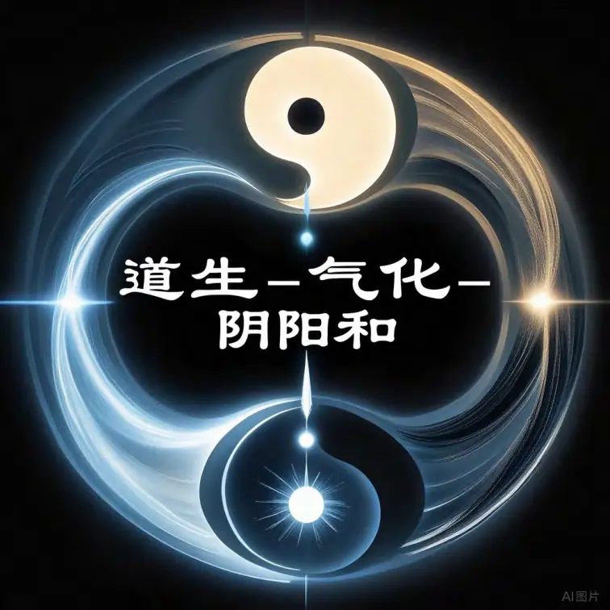
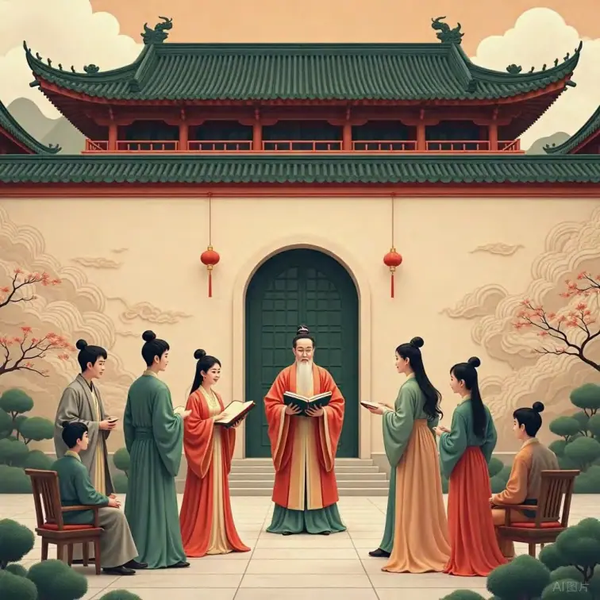
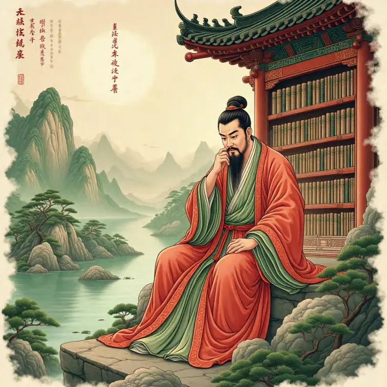
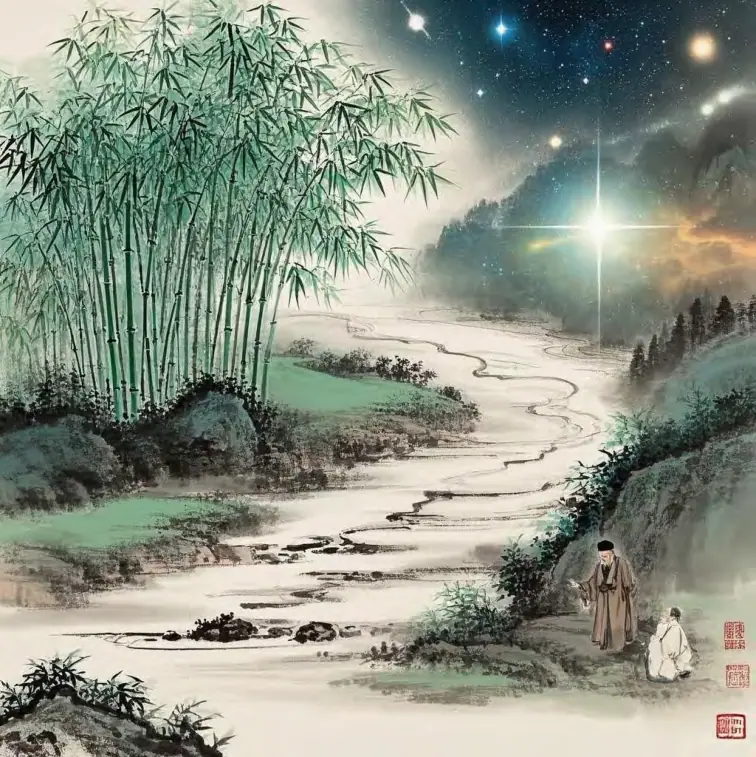
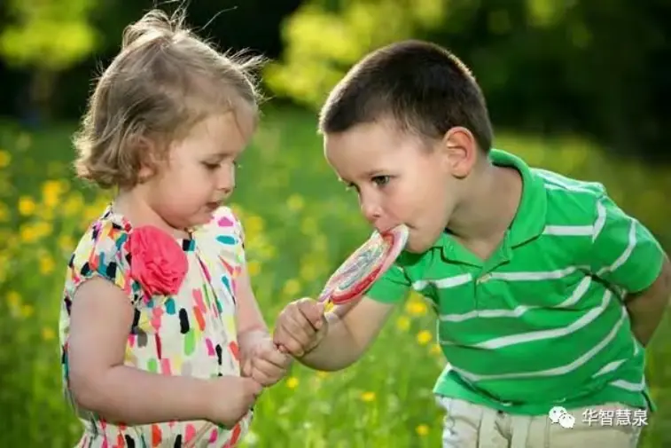
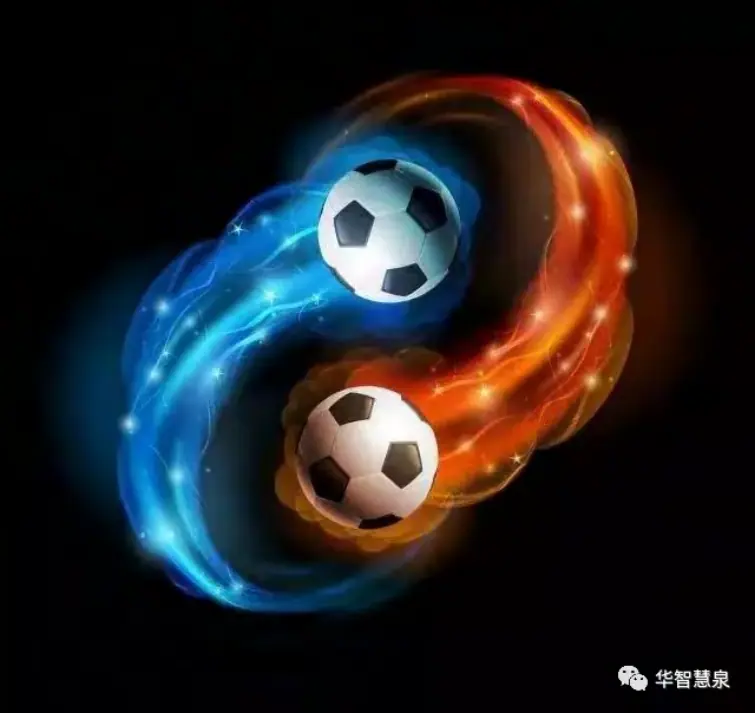
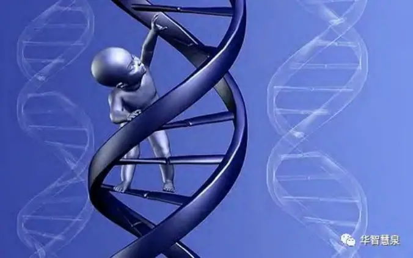
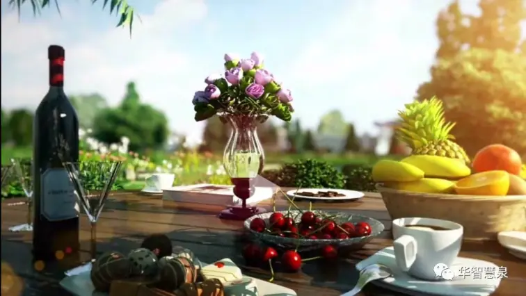

1. 导论
1.1 研究背景
中华文明源远流长，其中一个贯穿古今的核心理念可概括为“道生气化阴阳和”。这一短语融合了道、气、阴阳与生，化，和这三组6大要素，揭示了中国人看待宇宙和人生的基本方式。为什么说“道生气化阴阳和”是中华文化的核心？因为它几乎渗透于中国哲学、科学、医学、艺术乃至社会生活的方方面面。从上古先哲老子的《道德经》，提出“道生一，一生二，二生三，三生万物”，到《易经》“一阴一阳之谓道”的哲学命题，再到中医理论中的气血运行、阴阳调和，这一思想框架成为中华文化独特世界观的支柱。
简单来说，“道”是万物之本、“气”是变化之媒、“阴阳”是对立统一的两极、“和”则是最终追求的和谐状态。古人相信，正是由于道的运作，生出了宇宙万物之本原——气，而气不断运动变化促成了阴阳二元的分化与互动，最终达到万事万物的和谐平衡。这种观念不仅构成中国哲学的本体论、方法论和价值论核心，也融入了中华民族的生活实践之中。从阴阳调和的养生之道到以和为贵的处世态度，”无疑是理解中华文化的一把钥匙。

1.2 研究意义
深入理解“道生气化阴阳和”的哲学框架，对于现代世界有多方面的价值。首先，在全球面临生态危机、社会分化的今天，中国传统中“天人合一”“阴阳平衡”的思想有助于我们反思人与自然、个人与社会的关系。道强调顺应自然的规律，这对当代强调可持续发展的理念提供了智慧；气体现万物联系、动态变化的观点，有利于现代科学深入理解复杂系统；阴阳和凸显平衡与和谐的价值观，可为当今多元文化共存、冲突调适提供启示。
例如，在环境保护方面，中国文化中“万物一体”的观念有助于树立生态伦理，提醒人类应与自然和谐共生而非肆意征服。在家庭和社会治理方面，“和为贵”的价值观鼓励通过沟通与妥协化解矛盾，实现共赢。这对于当今充满对立情绪的社会氛围，无疑有积极意义。此外，在人工智能迅猛发展的时代，“道生气化”的思想可以引导我们思考技术与人的平衡：如何让智能技术的发展遵循“道”，服务于人类整体福祉而非失控。可以说，将中华文化核心智慧融入现代思想，有助于人类在迅速变化的世界中寻找稳固的价值坐标。

1.3 研究方法
本研究采用跨学科的方法论。一方面，我们将回溯经典，深入研读包含上述理念的中国传统典籍，如道家经典《道德经》《庄子》，阐发“道”的玄妙；儒家经典和史籍中对于“和”的论述；以及《易经》中关于阴阳变易的哲学和《黄帝内经》中关于气的理论。从这些经典中提炼思想精华，为理解“道生气化阴阳和”奠定基础。
另一方面，我们将结合现代学术研究成果，将传统思想置于当代语境中重新审视。例如，借鉴西方过程哲学（Process Philosophy）对“生成”本体论的探讨，将其与“道生万物”的思想对比；运用系统科学和生态学关于整体性与自组织的理论来阐释“气化”的科学意涵；参考认知科学和人工智能领域的最新进展，讨论“气化思维”与深度学习算法的契合之处。
具体来说，在研究过程中我们将：
文本分析
：对比不同经典文本对于“道”“气”“阴阳”“和”的诠释，厘清概念演变。例如比较老子与庄子对“道”的表述差异，孔子与荀子对“和”的理解区别等。
理论对话
：让传统哲学与现代哲学对话，比如用亚里士多德静态本体论和怀特海过程本体论与道家本体论比较，以突出“存在”与“生成”观念的差异。
案例研究
：搜集日常生活和具体领域中的案例，说明这些抽象哲学如何体现在实际现象中。例如，通过中医诊治实例说明“气”的运行，通过家庭关系说明阴阳互补，通过企业管理实例说明“无为而治”的智慧等。
综上，本文力图通过古今融合、跨界阐释的方法，全面展现“道生气化阴阳和”这一哲学体系，不仅解释其在中华文化中的历史地位，更挖掘其对当代世界的启示意义。

2. 道生：中华本体论
“道生”指的是“道”产生万物，即中国哲学的本体论命题。本节将探讨“道”的概念及其在古今思想中的演变，解释“道生万物”的含义，并将这一理念与现代科学的某些理论相比较，以彰显其当代意义。
2.1 “道”的概念：从老子到现代
在中华文化中，“道”是最高的存在论范畴，具有深邃而丰富的意涵。老子在《道德经》开篇即说：“道可道，非常道。名可名，非常名。”意思是说，我们能言说描述的道，都不是永恒不变的真正之“道”。这个玄妙的定义强调了道的不可言说性和终极性。对老子而言，道是宇宙万物的本源，但它超越了一切具体的名称和形象。“道”就像一条看不见的路径或法则，先于天地而存在，充盈于万物之中却又不显露其形。
庄子对“道”的理解更为浪漫和逍遥。他在《庄子》里通过大量寓言描绘了道的境界，比如“天地与我并生，而万物与我为一”，表达出人与万物在“道”上的根本统一。在庄子的笔下，道无所不在、无所不包，它不仅是万物之源，更是一种浑融一体的存在状态。庄子主张顺应大道，达到与天地万物冥合的逍遥之境。
儒家虽然侧重社会伦理，但也借用“道”来指引人生。孔子常谈“仁道”“中庸之道”，把“道”视为人应遵循的正路、天理和人伦准则。例如《论语》里有“朝闻道，夕死可矣”，表达出对人生真谛（道）的追求。儒家的道更偏向于道德原则和治国之道，如孔子倡导的仁爱之道、孟子提及的浩然之气之道等等。可以说，儒家把形而上的“道”转化为了社会实践中的理想规范。
进入魏晋玄学和隋唐佛学时代，“道”的概念又被不断阐发。特别是佛教传入后，与本土的道家思想互动，形成了“三教合流”的局面。例如禅宗里有所谓“不可说之法”，与老子“道可道，非常道”有异曲同工之妙，都强调真理不可用语言捕捉。这说明无论道家还是佛家，都承认终极实在的玄妙莫测。
现代而言，对于“道”的理解也延伸到新的领域。一些学者尝试用当代哲学语言诠释“道”。有观点认为，“道”可以类比为西方哲学中的存在本身（Being）（实际上是Becoming），或者自然界的普遍规律。还有人将“道”解释为一种过程：例如过程哲学家怀特海的思想就很接近道家，他认为世界的本质是不断“成为”的过程而非静止的实体，这与“道”生万物、变化不息的思想不谋而合。另外，有人把“道”与现代科学的宇宙演化观联系起来，认为道可以理解为宇宙从无到有、自我展开的根本逻辑。
此外，在日常语汇中，“道”也留下丰富痕迹。中国人说“天道”、“王道”、“商道”、“人道”，这些复合概念里的“道”，无不指一种内在规律或原则。例如“天道”表示自然法则，“王道”表示仁政之路，“商道”表示经商之道等等。这些用法虽属引申，但都源自对于“道”作为普遍法则的理解。可以看到，“道”的概念从老子的玄妙莫测，历经庄子的逍遥洒脱、儒家的伦理实践，一直到现代对宇宙规律的比附，其核心——作为万物本源和根本规律的地位始终未变。

2.2 “道生万物”：世界如何由道而生？
老子在《道德经》第42章阐述了著名的宇宙生成论：“道生一，一生二，二生三，三生万物”。这段话高度凝练地描述了万事万物起源于“道”的过程。按照这一说法，道先产生了最初的一种存在（“一”），这“一”可以理解为混沌未分的元气或太极；由“一”再产生出对立的“两”（阴与阳两种基本要素）；由“两”结合产生“三”（古人有多种解释，或指阴阳交感之和气，或指天地人三才）；由“三”再衍生出森罗万象的万物。
尽管对“一”“二”“三”具体所指众说纷纭，但“道生万物”的核心思想在于：宇宙万有不是外在造物主凭空创造的，而是由内在的“道”自我生发的结果。道作为本源，通过分化出阴阳两极及其组合互动，生成了复杂多样的世界。这种宇宙观与西方“上帝造物”或“智能设计”截然不同，更接近一种自然演化论：先有一个混元的本体（道），然后内部产生二元张力（阴阳），再通过不断的运动变化产生万物。这实际上可以看作是中国古代对宇宙起源的一种哲学性“模型”。
在道家看来，道生万物的过程是自然而然（自然）的，并不需要外在干预。老子说“人法地，地法天，天法道，道法自然”，意思是道以“自然”为法则，其运作是不假人为、不依外力的。“自生自化”是对道生万物的另一种表述。宇宙万物好比从道这片沃土中自行萌芽生长出来一般。
中国古代另一个重要的宇宙生成论模型是太极生两仪。例如宋代周敦颐的《太极图说》开篇：“无极而太极。太极动而生阳，静而生阴；阳变阴合，而生水火木金土。”这里的“无极”可以类比“道”，“太极”类似老子所说的“一”。太极生出阴阳“两仪”，阴阳再互相作用化生出“五行”，由五行再构成万物。这与老子的描述本质一致，只是用了儒家易学的术语进行阐释。无论是老子的“道生一，一生二”，还是周敦颐的“太极生两仪”，都是说宇宙根本原理（道/无极/太极）先分化为阴阳二元，对立而又统一的两种基本力量，进而通过它们的组合变化产生具体存在，即进入存在态：SIO（主客互动）。
需要强调的是，在中国哲学中，道并非人格神。尽管道是万物之源，但它不是西方式的造物主，没有意志和目的，不以人的形象存在。老子明确指出“道常无为而无不为”，道以无为的方式“生成”万物——它不像工匠造物，而更像园圃里的土壤，默默滋养万物自生自长（就是一种催眠之道）。这种观念可以用“生生”来概括：道的本质特征就是不断地生发、生长（所谓“生生之谓易”），令宇宙处于一种恒常的创造过程之中。
这种生成论还有一个特点：它没有一个明确的起点或终点，强调的是一个循环往复、永无止境的过程。道生万物，万物复归于道。老子也说：“万物并作，吾以观复”，意思是万物纷纷产生出来，我观察到它们又复归于原初的状态。最终，万物又回到道的怀抱，然后再生出新的万物。这个循环贯穿古代典籍，如《易经》中也体现“终则复始”的思想。这种视角与现代所说宇宙循环论类似，而非一线直达的时间观（其实就是SIO的三态：Becoming，Being，Leaving轮回）。
总之，“道生万物”是中国本体论的核心命题，它为我们提供了一幅壮丽的宇宙生命图景：看不见的道孕育出看得见的一切；一切有形之物皆来源于无形之道。理解这一点，有助于我们明白中国文化为什么强调顺应自然、敬畏天地——因为天地万物皆与我同出一源，皆在大道之中运行。

2.3 现代对应：物理学中的场论、生态系统的自组织
有趣的是，古代关于“道生万物”的思想，在现代科学中找到了某些对应的观念或类比。尽管科学理论和哲学隐喻有本质区别，我们仍可以通过类比来更直观地理解“道生万物”。
首先，在现代物理学中，场论的兴起提供了一种与“道”相似的视角。传统牛顿力学认为世界由基本粒子构成，这些粒子之间通过力相互作用。但20世纪的量子场论告诉我们，更基本的不是粒子，而是场——充满时空的看不见实体。粒子被视为场的激发或波动。例如，我们说电子其实是电子场的一种局部激发模式，而不是孤立存在的“小球”。这样，整个宇宙充满各种场，粒子只是场的表现。这个思想很像“道”为本、万物（粒子万相）为末的关系。我们可以打一个比方：道好比遍布宇宙的“场”，万物好比该场的各种“激荡涟漪”。
譬如，真空不等于“无”，量子真空实际上蕴含各种可能性的场，当有合适条件时会涌现出粒子。这种“虚空生万物”的物理图景，与老子“无中生有”的哲思暗暗契合。当然，两者表述和严谨性不同，但类比有助于理解：现代物理承认一个看不见但无所不在的基础（场），正如道也是无形无相却生成一切。
另一个对应是宇宙学中的大爆炸理论。按照科学模型，整个宇宙始于一个极度炽热致密的奇点，随后迅速膨胀、能量冷却，逐渐形成基本粒子、原子、恒星、星系，演化出今日万千天体。这种从“一”（奇点）生“万”（宇宙万物）的过程，与“道生万物”的思路也有相似之处。虽然科学不讨论“道”，但如果我们追问“奇点”之前是什么，科学上或许无解，而哲学上老子会说是“道”。因此，有些学者喜欢用“道”去泛指宇宙演化背后的终极原因或潜能状态。
其次，在生态学和系统科学中，强调自组织和涌现的概念与“道生万物”也可以相联。生态系统中，没有一个外在的指挥者在安排森林如何成长、河流如何流淌，但各种生物和非生物要素通过自身的互动（潜意识SIO）形成了森林生态、河流生态。这种自组织(self-organization)指的是：整体的秩序涌现自各部分的局部作用，而不是由外力塑造（即新SIO不是从旧SIO直接生成，而是由各种各样的潜意识SIO核聚合而成）。例如，一片无人干预的荒野会自然演替出稳定的植物群落；一个珊瑚礁生态系统会自我调节维持多样性。这类似“道”在发挥作用：道不干涉具体事务，但万物依据各自本性和相互关系，自然地形成一个有序的整体。正如老子所言“道常无为而无不为”，对应于生态学上，无为就是没有外在干预，无不为就是仍然产生了复杂的有序结构。
一个典型案例是蚂蚁群落的构建。成千上万的蚂蚁各自为政，没有总指挥，但通过信息素交流和简单规则，就能建造庞大精巧的蚁巢、组织分工明确的群体活动。这种整体秩序来自底层简单规则的现象，在科学上称为“涌现”。我们可以说，在蚁群中，起作用的是一种“无形的规则之道”，让每只蚂蚁都遵循，从而“生出”蚁群这样的宏观有序。人类社会中也存在类似的涌现现象，比如市场经济没有中央计划但在价格机制（无形之手）引导下形成供需平衡，也是一种自发秩序。
再有，系统论中的思想也能帮助理解“道生万物”。系统论告诉我们，任何复杂系统（生物也好、社会也好）都有一些整体性质是局部元素所不具备的，这就是常说的“整体大于部分之和”。而这些整体性质往往源自元素之间的关系与互动。放在哲学上，可以说“道”体现在关系之中，通过关系生成新性质、新形态。例如水分子（H2O）是由氢和氧原子组成，但当无数水分子相互作用，就涌现出“湿性”这种单个分子不具备的性质，这可以视为“道”在水中的妙用。同样地，单个人类有智慧，但成千上万人的互动（通过语言、文化）“生成”了文明这种复杂现象——文明并非哪一个人直接造就，而是人类社会集体的“道”孕育而出。
当然，以上类比并非说科学证明了道的存在，而是为了说明中国古人的“道生万物”思想有其合理性：宇宙间确实存在一些看不见的统一背景和内在规则，使得万物能够从简单到复杂、自我演化。现代科学越发展，我们越发现世界不像机器那样由外部工匠组装，而更像一个自长自化的有机系统。这与中华文化所崇尚的“道法自然”思想异曲同工，也难怪有西方科学家如卡普拉（Fritjof Capra）撰写《物理学之道》一书，专门比较了现代物理与道家思想的契合之处。
综上所述，从古至今，“道生万物”的观念在不同语境下展现出生命力。尽管表述方式不同，但核心都是对宇宙内在创造力的赞叹：一个看不见摸不着的本源（无论叫“道”还是“场”或别的），通过自身运动和分化，绽放出丰富多彩的天地万物。这一宏大视野，不仅是中华本体论的精髓，也为现代人提供了一种整体观宇宙的智慧。
3. 气化：中华方法论
如果说“道生”解决的是“存在从何而来”的问题，那么“气化”思考的则是“万物如何变化”。“气化”指万事万物由气的运动、聚散、升降而发生变化和转化的过程，它代表了一种典型的中国式方法论：世界是通过“气”的流动与变易来运作的。本节我们将探讨气在哲学和科学上的含义，气化观如何指导中国人的思维和日常实践，以及如何将这一思想与现代科技（如人工智能的学习机制）联系起来。
3.1 气的哲学与科学：气如何成为变化的媒介？
在中国古代哲学中，“气”是一个与“道”同样重要的范畴。如果说道偏重本体、形而上，那么气更偏重现象、形而下。简单地说，气是构成宇宙万物的基本物质与能量。早在先秦时代，不少思想家就提出世界由气所构成的看法。例如，战国时期的邹衍提出“天地合气，万物自生”，认为天地间的阴阳二气相合便产生万物。汉代董仲舒也说“气者，神之使，使万物生者也”，强调气是使万物生成的动力。
气有哪些特性，使它能够成为普遍的变化媒介呢？首先，气具有普遍性。据古人理解，凡有形有象之物，皆由气所凝聚；凡无形无象之事（如声音、光、声、热乃至精神意识），也可视为气的作用或表现。正如现代学者所总结的：“一切存在，无论有形无形，都是气所化。”。在《淮南子》等典籍中有类似描述，认为天地初开时是一团元气，继而清气上升为天，浊气下降为地，人亦由父精母血之气孕育而成。甚至人的喜怒哀乐，也是气在体内的不同运行状态所致。因此，气连接了物质-能量-精神这三个领域（所谓“形而下者有之，形而上者亦有之”）。
其次，气具有动态性。气不是静止不变的，相反，它始终处于运动之中。这种运动包括升降出入、聚散开合等形式。例如，《黄帝内经》中讲“气有升降出入”，指人体内的气不断向上、向下、向外、向内流动，以维持生命活动。自然界也是如此，空气在天地间循环，上升为云、下降为雨；地气蒸腾、生出万物，秋冬肃杀、万物收藏，都是气在时节中的升降出入。由于气不断运动，所以世界万物也就在时时变化，这正是“气化”一词的由来——气化即气的变化，万物之变化皆由气之变化所驱动。
再次，气具有连续性和可分性。气可以稀薄、弥散，也可以凝聚、结成具体东西；它可以细腻绵延，也可以猛烈冲击。这意味着气是连续统一的存在，可以在不同状态之间转化。《礼记·中庸》里说过“形而上者谓之道，形而下者谓之器”，朱熹将其解释为“气之聚散”和“理之屈伸”。意思是，当气高度凝聚，就形成具体的“器”（物体），当气散开，则又回复无形。但无论聚或散，都是气本身状态的变化，而不是本质截然不同的两种东西。所以天地之间从虚空到实有，是一个气的连续谱，不存在不可逾越的鸿沟。这和西方传统将精神与物质截然两分不同，中华思想更倾向于一元论：宇宙只是一种东西（气）在不同层级的显现。
基于以上特性，气成为沟通天地、人神、身心的桥梁。例如，中医学认为人的身体和自然界通过气相互感应：天气变化可以影响人体内的气机（所以有“天人相应”理论），反过来人体通过调息、导引，也可以与天地之气交流（比如打坐吐纳据说能吸收天地正气）。气还是身与心的中介，中医常说“怒伤肝”“思伤脾”，情绪情志会影响脏腑功能，其机制在古人看来就是因为情志属无形之气，内伤脏腑时使脏腑气机紊乱，从而产生病变。
从科学角度来审视“气”，我们可以找一些近似概念。一个是能量。现代物理学表明，物质和能量可互相转换，本质上是一回事（爱因斯坦质能方程）。这有点类似“气”的观念：气既包括具体物质形态，也包括抽象的能量。比如古人讲水谷之精气化为血肉，即食物（物质）转化为人体能量和组织。再如武侠小说里内力运转、隔空打物，虽然夸张，但也是把气当成一种看不见的能量来对待。实际上，中医的经络和气的概念，一些人会将其类比为神经电信号或生物电场，这也是能量范畴的理解。
另一个相关概念是场，前面也提到过。电磁场、引力场这些遍布空间、能够传递作用的东西，很像气的角色。在没有直接接触的情况下，场可以让物体相互作用，比如磁铁隔空吸铁，这是看不见的磁气在起作用。古人不知道电磁，但他们相信气可以贯通物体之间的互动，如中医的气功疗法强调发放“外气”影响他人体内的平衡。这听起来玄，但置于“场”的理论框架下，可以理解为可能是生物电磁场在起作用（现代对此有研究但尚无定论）。
气成为变化媒介，意味着一切变化过程都可用气的运动来解释。例如，水变成冰，是水之气凝聚；水变成蒸汽，是水之气扩散升腾。在中医看来，人体发烧是阳气过盛、体寒是阳气不足；情绪起伏是心肝之气郁滞或逆乱所致。这种用气来解释变化的思路与西方用力和因果链来解释变化有所不同。西方更习惯说A作用于B导致变化，而中国更习惯说B内部的气怎样了所以变了。例如，看到树叶枯黄，西方可能说因为天气转冷致使叶绿素分解（外因作用），中国则说秋天金气肃杀万物凋零（环境之气变化，植物顺应自身之气收敛）。两者并不矛盾，只是侧重点不同：中国方法论更强调内在因素和整体环境场，而西方更强调外在作用力。
3.2 现实应用：日常生活中的气化
“气化”听起来抽象，其实处处可见于我们的日常生活。这里我们通过几个日常案例，看看如何用“气”的观念来理解身边现象：
饮食烹调：做饭时，我们利用火的热气将生食变熟，这本质是热能之气在食物中传导，改变了食物的性状（变软、变香）。烹饪讲究“火候”，其实就是调控火之气的强弱和时间长短。炒菜时猛火快炒和文火慢炖，所产生的“气化”效果不同，菜的口感滋味也不同。中餐里还有“锅气”一说，指的是高温爆炒瞬间产生的香气和风味，乃厨艺精髓。这都说明烹饪是驾驭和利用气化的艺术：热气入于食材，食材内部的水气、油气蒸腾出来，形成美味。
泡茶品茶：中国人爱茶，道家甚至以茶悟道。在泡茶过程中，水和火两种气起关键作用。水为阴柔之液，火为阳刚之热。烧水时，火之阳气注入水，使水温升腾（水沸腾冒热气，就是水之气被激发出来）。冲泡茶叶时，热水的气与茶叶中的内含物相互作用，将茶香、茶滋味释放出来，这就是茶汤的形成。所谓“茶气”，有时指茶中的咖啡因等给人体带来的兴奋感，也可以指品茶时人感受到的一种氤氲之气。在品茶过程中，人往往会讲究环境幽静、心神放松，这样才能以气会友，以茶气交融人的精神之气。其实，我们喝的何尝只是水和茶多酚？喝的也是一种气的享受——水气腾腾间，茶香萦绕，人与茶的气息融为一体。
呼吸与情绪：人一紧张害怕，会说“喘不过气来”；高兴舒畅时，则感觉“一身轻松，透透气”。情绪对呼吸和身体感觉的影响，其实正体现了气在身心之间流动。当人愤怒时，会“肝气上逆”，表现为脸红脖子粗、呼吸急促；忧思时“气结于胸”，可能觉得胸闷叹气；恐惧时“肾气下陷”，可能腿软、失禁。这些生理反应，都可以用现代医学解释为激素分泌或神经作用，但用中医的话说更简洁：七情内伤，皆乱其气。反之，我们也可以通过调节气息来影响情绪。比如深呼吸可以平复紧张，吐纳法能纾解烦忧，运动流汗使气血调和让人愉悦。生活中人们常说“静心”、“缓气”，都是在利用气化的方式调节自我。
四季变迁：春夏秋冬的交替是最宏大的气化舞台。古人将一年分为春生、夏长、秋收、冬藏，对应着四季之气不同：春天气温回升，万物生发，是阳气升腾、滋生之时，植物抽芽、动物繁殖，这属于“生”的气化；夏天阳气最盛，草木繁茂，这是“长”的气化；秋天天气转凉，阳消阴长，果实成熟、叶落归根，是万物收获凝敛之气化；冬天寒冷，生机潜伏，万物闭藏养精，是阴气极盛、静待再生的阶段。这样循环往复，就是一年之气的生化过程。我们日常也随着季节调整生活：春夏养阳、秋冬养阴，夏吃清热食物、冬吃温补食品，都是顺应四时之气的体现。
中医诊疗：看中医是日常生活中直接接触“气化”哲学的体验之一。中医大夫把脉时，实际上是在感知你的脉搏之气；看舌苔、面色，是观察气在体表的迹象。一个“气”字横贯中医理论：气血是人体的基本，要气行则血行；经络是气的通路，经通则气达；针灸是调气，针刺特定穴位可以疏通或引导气的流动；草药也是通过温补或寒凉之性来影响五脏六腑之气的平衡。比如一个人常感疲倦乏力，中医可能说他“气虚”，于是给补气的药如人参、黄芪；若人烦躁易怒、头胀痛，可能是“肝阳上亢”气逆，就用平肝潜阳的药如龙骨、牡蛎。这些疗法的背后逻辑都是扶正祛邪、调和阴阳，归结到底就是调整体内紊乱的气，使之恢复该有的升降出入规律，从而恢复健康。
通过这些例子可以看到，“气化”哲学并非高高在上，而是渗透在饮食起居、身心感受、四时活动的点滴之中。中国人的传统智慧往往善于从这些具体体验中抽象出道理，又把抽象的道理指导具体生活实践。例如，懂得了情志影响气机，就知道要修身养性、保持乐观避免大悲大喜伤身；理解了四季之气不同，就学会春捂秋冻、适时进补；明白了病由气生，就在亚健康时通过运动、针灸等理疗“疏风散寒”、“行气活血”防患于未然。
总之，气化观让人们用一种整体流动的眼光看待生活：没有什么是孤立静止的，一餐一饮、一呼一吸都与周遭环境和自身状态密切相关，都是气在起作用的结果。这样，人不会拘泥于某一刻的得失，而是更注重过程和平衡。例如烹饪讲究火候过程而非某种配方定死；养生强调动态平衡、调节气机而非一味吃补药；处理情绪重视循序渐进地调适而非一蹴而就解决。一句话，气化的智慧教会我们顺应变化、掌控变化，而非固执地对抗变化。
3.3 现代科技应用：人工智能的深度学习与气化思维
令人惊讶的是，古老的“气化”思维在当代最前沿的科技领域——人工智能（AI）的发展中，也找得到相似的思路。其中最典型的就是深度学习(Deep Learning)的算法原理，与“气化”的某些特征颇为相通。
深度学习是目前人工智能的核心技术之一，它通过模拟人脑神经网络来让计算机“学习”能力。传统的软件编程是由人写好固定的规则（if-then逻辑），计算机按照规则执行判断，这可以类比为西方式的逻辑推演。而深度学习则不同，它并非预先设定明确规则，而是给定一个多层神经网络结构，让它在大量数据中自动调整内部连接权重，从而“涌现”出识别模式或决策能力。这种方式更接近一种自组织的过程。
我们可以将神经网络看作一个复杂系统，输入数据就像输入能量或信息之气，在网络层层传递、转化。刚开始时，网络的连接权重随机，输出混乱无序。但随着一轮轮训练（数据反复“吹拂”这个网络），网络内部逐渐形成有用的连接模式，就像气在经络中逐渐疏导通畅一样。最终，系统达到某种相对稳定的状态——它学会了对输入做出合理的输出。这整个学习过程没有人去硬编码某条规则，而是网络自适应地调整，如同万物在气的流动中自我演化。
这种由无序到有序的演化，与气化思想高度契合。我们可以打个比方：假设“道”是AI系统设计的大框架，“气”就是海量训练数据流，“阴阳”代表网络中不同的信号抑制与激活，“和”则是最终网络达到平衡、能正确识别的状态。那么深度学习的本质恰似“道生气化”的再现：在道（算法框架）引导下，数据之气不断冲击网络，使内部权重发生阴阳般此消彼长的调整，最终网络各层配合达到和谐，可以正确处理任务（比如识别图片或翻译语言）。当然，这只是形象的类比，但却能帮助理解AI学习的动态过程。
更直观地说，在深度学习中我们强调调参（调整参数）和迭代。这类似炼丹，需要反复“烧炼”才能成丹。炼丹术士讲究火候，深度学习工程师讲究学习率、迭代次数，这些都是控制“气”的节奏：学习率太高，相当于火气太旺，网络容易发散；学习率太低，相当于火气不足，网络学不透。只有合适的参数，让数据之气循序渐进地流经网络，才能逐步逼近全局最优解，就像慢火熬汤才能入味。这里的思维与中医调理身体的“循序平补”异曲同工，讲究不偏不倚，渐进调和。
人工智能的学习还强调分布式表示，即知识不是存在某一个节点上，而是以权重分布在整个网络中。这也与气的弥散性相类：知识之“道理”弥漫于网络，像气一样无形，却让整个系统出现智慧的“有形”表现。这和中国哲学认为道存于万物之中，每件小事里都有大道理，有异曲同工之妙。西方传统AI早期尝试用明确定义的符号和逻辑（专家系统）让计算机智能化，结果碰到了瓶颈；而现代AI转向让计算机自己从大量数据中摸索模式，取得了巨大成功。这转变某种意义上就是从偏重显性逻辑（西方理性）转向隐性气化（东方智慧）。
一个更有趣的对应是“无为而治”的思想在AI中的体现。道家主张，最高明的治理者并非事必躬亲、强加管制，而是设定好基本的框架，让万事万物自行运作达到和谐。这与强化学习中的一些理念吻合。强化学习让智能体在环境中试错，从反馈中学习最优策略。如果设计者对智能体管束太多（比如加很多人为限制），往往适得其反，效果不佳；而给它一定自由去探索（无为而“学”），它可能自创出令人意想不到的绝佳策略。著名的AlphaGo下棋程序，在训练过程中并没有人类告知每一步棋该怎么下，而是通过自我博弈学习到高超棋艺，最后甚至下出过人类从未见过的“妙手”。这有点像道家所说“道常无为而无不为”：开发者只是提供了棋规和学习机制（道），剩下全由程序自己练习领悟，最终无不为——达到了精妙无比的棋力。人们惊叹AlphaGo有种“创意”，其实不过是自动化的气化学习造就的结果而已。
再者，AI的发展也促使人们思考整体关联的重要性。例如，在图像识别中，算法不再仅仅看局部特征，而是通过卷积神经网络把全局上下文考虑进去，这有点像用“看整体之气”而非“看局部之形”来辨认。同样，在自然语言处理中，Transformer模型通过注意力机制让每个词都关联到句子中所有其他词，语义理解更加准确。这些进步都是源于一种整体思维（holistic thinking），与中国“观其大略”或“执两用中”的思维方式类似。中国的气化思想强调任何事物都在网络中、在运动中理解，AI模型的演进也在朝这个方向，即让机器像人一样从上下文关联中理解意义，而不是死板地逐词翻译。
总之，人工智能的深度学习过程，与气化思维不谋而合：都强调通过大量信息（气）流动来逐步优化内部结构，涌现智慧和秩序，而非仅靠预先设计的固定逻辑。可以说，AI的成功在一定程度上是科学范式的转向——从牛顿式可解析模型转向复杂系统的自学习模型，这与东西方思维的差异有共鸣。在这点上，现代科技正印证了古老智慧的价值：有些问题，整体演化的办法（气化）比线性分解的办法（传统逻辑）更为有效。
当然，将深度学习直接等同于气化思想并不科学，不过这种跨时空的类比能激发我们新的认识。它说明，中国传统哲学并非与科技时代脱节，其中蕴含的对复杂性、动态过程和整体联系的重视，正是当代前沿科技所需要的思维方式。未来，随着人工智能进一步发展，我们也许会更多地用东方“道”“气”的隐喻去理解那些高度复杂自组织的技术体系，让传统智慧在高科技时代焕发新的光彩。
气化就是道生的具体实现技术、方法和器具，是“道”在现实世界中的运作方式和展现形式。道是宇宙的根本原则，是不可见的流动性本体，而气则是道生化万物的工具和媒介，负责让道的创造力得以在现实层面展开。气化的过程，就是道通过气的运动、生化、转化、聚散，使万物得以存在、演化和互动的机制。
换句话说，道是本体，气是动力，气化是执行系统。就像计算机的操作系统是底层框架，而具体的软件、硬件交互则是让系统运行的“气化”过程。同样，古人认为，道生万物的方式不是凭空创造，而是通过气的调控完成。气化就是一整套涉及时间、空间、物质、能量、运动方式的生成技术——它涵盖了宇宙如何运作，生命如何生长，社会如何运行。
举例来说，在自然界，气化表现为春生、夏长、秋收、冬藏的四季循环；在医学上，气化是五脏六腑的运行、血气循环、阴阳调节；在社会中，气化体现在人际关系的运作、经济系统的演变、文化的传承。“气化”相当于“道”的编程语言，是“道生万物”具体运作的工程学。如果道是哲学的终极原则，那么气化就是它的应用技术，让生生不息的宇宙工程得以持续运作。
4. 阴阳和：中华价值论
中华文化的终极追求之一就是“和”，即和谐、和睦、和平的境界。而要达到“和”，手段在于平衡和调适阴阳。阴阳是中国哲学里解释宇宙万物对立统一关系的概念，它强调相反相成的两个方面动态平衡。本节将讨论阴阳观如何体现动态平衡的智慧，“和”的真义为何是共生成而非单一，以及这一思想运用于现代社会治理和经济体系的意义。即中华文化的价值是一切为了实现’生成‘，而且是‘共聚力通过和的方式来实现’生成‘：主客连接的桥梁就是‘和’！
4.1 阴阳的动态平衡观
阴阳原本是古人对自然现象的概括：日光照到山的一面，那一面明亮温暖，称为阳；背光的一面阴暗寒凉，称为阴。由此引申，凡事物具有相对的两面性，都可用阴阳描述。例如天为阳、地为阴；日为阳、月为阴；动为阳、静为阴；进为阳、退为阴；甚至在中医里，背为阳、腹为阴，人体上部属阳、下部属阴，等等。不难发现，阴阳并非固定对应好坏，而是任何系统内部的两种基本属性或倾向。
阴阳的关键在于动态平衡。正如《易经·系辞传》所言：“一阴一阳之谓道”，也就是说，道就是阴阳消长变化的法则。自然界中，我们随处可见阴阳平衡的例子：昼夜更替，白昼（阳）增长则黑夜（阴）缩短，反之亦然，一天24小时阴阳此消彼长却恒定循环；人体健康需要阴阳调和，既不能阳气亢奋（导致燥热上火），也不能阴气过盛（导致寒凉虚弱），中医讲究“阴平阳秘，精神乃治”，就是指阴阳守衡，人就身心安康。
一个显著特点是：阴阳可以相互转化。俗话说“物极必反”，在阴阳理论中表现为阳盛到极致则转化为阴，阴极也会生阳。这在自然中有无数证明：一年中夏至（阳至极点）之后白天开始变短，阳气渐收；冬至（阴至极点）之后白天变长，阳气回升。又如中医发热病人高烧不退（极阳），如果突然体温降至异常低（似阴证），反而是阳气衰竭的危险信号，即“转阴”了。这警示我们，任何一个方面发展到极端都会孕育其对立面，于是适时调节以避免走极端，就尤为重要。
阴阳的另一个特点是互根互用。阴阳之间并非绝对对立，而是相互依存。没有阳就无所谓阴，没有阴也无所谓阳。例如，没有黑暗我们不会感知光亮，没有休息就无所谓工作，没有压力也体现不出放松的状态。庄子以“一尺之棰，日取其半，万世不竭”来说明这个道理：切一根木棍，每日取其一半，永远取不完，因为永远有一半留着。此喻虽与阴阳不同，却透露出类似哲理：对立面永远并存，不可彻底消灭。中国文化因此崇尚中庸之道，即不过偏阴也不过偏阳，以维持系统长久稳定。
在家庭关系中，我们也能看到阴阳平衡的哲学。传统观念中，父亲常被比作太阳（阳刚），母亲如月亮（阴柔）。良好的家庭教育需要父亲给予纪律和力量之阳，母亲给予关怀和柔和之阴，两者结合孩子才能身心健全。如果两位家长都一味严厉缺乏温情，家庭氛围会紧张失衡；反之如果都过于溺爱缺乏原则，孩子可能恣意妄为。这就如同太极图中阴阳鱼：黑中有白眼，白中有黑眼，寓意每一方内都含有对方的种子。家庭中也需要刚中有柔，柔中有刚，父母互相补充，才能营造和谐的阴阳之和。
日常个人生活中，阴阳平衡同样重要。比如作息规律就是阴阳平衡：白天工作学习属阳，要积极进取；夜晚睡眠属阴，要休息滋养。如果熬夜过多，属阳的活动侵占了阴的时间，久而久之身体就吃不消（所谓“阳亢伤阴”）。再如饮食上，中医提倡寒热平衡：体质寒的人应多吃温热性食物以平衡阴寒，体质热的人要适当吃寒凉食物泄火。这其实就是给身体内部的阴阳天平加砝码，使之恢复中正。心理上，一个人也需要阴阳调节：要有阳光开朗的一面（外向活跃），也容许自己有静思独处的时刻（内向沉稳）。总是极端外向可能浮躁不安，过于内向又可能压抑郁结。把握阴阳之度，方能人格平和。
因此，阴阳的动态平衡观告诉我们：世间万物的健康与和谐，在于对立双方保持适度的张力和平衡。既要承认阴阳差异，又要避免一方凌驾另一方。它反对走极端的做法，强调折中调和的重要。这一思想在今天仍十分有价值。无论是生活方式还是社会治理，凡事宜讲究平衡之道：经济发展要和环境保护平衡，自由要和秩序平衡，个人权利要和社会责任平衡。当我们遇到矛盾时，不妨想想阴阳之理，也许会找到一个既不偏废任何一方、又能兼顾整体和谐的解决方案。
4.2 “和”不是同一，而是共生
“和”是中华价值观的核心，常见的表达如“和谐”“和平”“和睦”“和解”等。然而，“和”并不等于简单的“一致”或“相同”。孔子曰：“君子和而不同，小人同而不和。”（《论语·子路》）这句话揭示了和与同的区别：君子追求的是和谐但保留差异，小人则一味追求表面一样却内心不和。
“和”意味着多样性的协调共存。正如音乐中的“和声”，是不同音符同时奏响却产生悦耳的效果。如果所有乐音都一样（同一音高同一节奏），那只能叫“齐”而不是“和”，反而没有美感。“和”需要有差异的存在，然后通过正确的方式将差异组合，使之相辅相成，产生比单一成分更高层次的整体价值。这就是“和实生物”的道理：只有把不同的东西和谐地结合起来，才能创造出新的生命力和创造力。
传统烹饪也是讲“和”的艺术。八珍玉食并不是把味道相同的食材堆在一起，而是酸甜苦辣咸鲜各种味道恰到好处地搭配。“和”菜讲究的是五味调和，每种味道各具特色又相互衬托，形成丰富的层次。如果一锅汤里只有盐味，那味觉体验就太单调了。又比如，中国茶道讲究茶、水、器、境的和谐统一：茶叶有苦甘之性，水有软硬之别，茶具有陶瓷玻璃之异，周围环境又赋予心情感受。好的品茗体验，是把这些不同因素协调起来，形成一种幽雅宁静的氛围，让人感到恰如其分的舒适。
可见，“和”绝不是消除差异，更不是压制一方、强求一致。真正的和谐状态是“和而不同”：有差别，但不冲突；多样化，但彼此包容。在自然界，这种和谐随处可见。一个健康的生态系统通常物种丰富，彼此形成食物链与共生关系，实现整体稳定。如果只有单一物种泛滥，其实生态非常脆弱，一旦环境变了就可能崩溃（例如外来物种入侵导致单一化，生态破坏）。所以，生物多样性本身就是自然“和谐”的基础。不同动植物通过竞争又合作，共同繁荣，这就是“和”的生态版本。
人类社会也类似，需要多元共生才能真正繁荣。如果只允许一种声音、一种文化，社会缺乏活力；但如果各种声音水火不容，社会又会陷入撕裂冲突。所以理想状态是在多样性中寻求共同点，在共同体框架内包容差异。《周易》有句话：“二人同心，其利断金；同心之言，其臭如兰。”这里的“同心”不是让两个人一模一样，而是指志同道合、目标一致。在尊重个人差异的基础上形成价值共识，这是“和”的精髓。在现代多元社会，我们强调多元文化并存，但同时提倡核心价值观（如自由、平等、人权）的凝聚，这恰是“和而不同”的实践：大家背景各异，但都遵守某些基本共识，社会因此和谐有序。
“和”还是一种处理矛盾冲突的智慧。遇到矛盾，“和”主张调解折中，不走极端路线。例如，中国古代讲究“中庸之道”，但中庸不是平庸无为，而是在两端之间找到恰当的平衡点。中医治病也强调“不偏不倚”，既不能猛攻也不能坐视，要在攻邪与扶正之间拿捏分寸，让身体逐渐回归平衡。在外交关系上，“和为贵”体现在以谈判沟通解决争端，尽可能避免兵戎相见；在商业谈判中，注重互利共赢，而非零和博弈。现代管理学中也引入了东方的“和谐管理”理念，鼓励企业内部建立合作共赢文化，减少内部耗斗。
需要指出，“和”并不意味着没有原则地妥协。有些情况下，不冲突不代表真正的和谐。例如一个团队里表面上大家都附和领导（所谓“同”），但背后各怀心思，缺乏真正信任，这不是和谐的团队。真正的“和”要求各方开诚布公地交流，在充分理解彼此差异的前提下找到兼顾各方的方案。所以“和”需要智慧和耐心，并非一味退让或者假装太平。
中国文化中还有“和而不同”的延伸理念——“和合”。“和合”强调在和谐共处中产生融合创新。像中国的农历新年，各地有不同的习俗和美食，但在春节这个大框架下，南橘北枳都成了一种多姿多彩的年文化，彼此并不冲突。这种集大成、包容众美的思路，让中华文明能历经朝代更迭依旧连贯，因为它不断地吸纳新元素融合进自己的系统，而不是排斥它们。唐代文化那么绚烂，正是因为中原文化与胡风、西域文化“和合”出新。所以“和”还有创新之意：通过融合不同资源，激发新的可能。
总结来说，“和”的价值观教导我们：完美的和谐不是单调划一，而是丰富多彩的统一。它要求我们欣赏差异、尊重个性，并具备将不同元素协同起来的智慧。在个人生活中，这意味着既要坚持自我，也要善于倾听他人、配合他人；在社会层面，这意味着追求共识与多元的平衡，反对极端的同质化或撕裂对立。只有这样，才能实现真正长久的和平共处和繁荣发展。
4.3 现代社会治理、经济体系中的阴阳和
将阴阳和的理念应用到现代社会治理和经济体系中，可以提供独特的洞见和方法，帮助我们驾驭复杂的社会经济问题。
首先，在社会治理方面，阴阳和思想强调刚柔并济、宽严相济。一个社会要保持秩序和活力，需要阳刚之治与阴柔之治相互配合。所谓阳刚之治，可对应法治、纪律、惩戒等硬性措施；阴柔之治，则对应德治、教化、弹性处理等软性方法。中国古语有云：“刚柔相推，变在其中”，意思是刚和柔的相互作用才能应对变化的局势。现代治理中也是如此：一味严刑峻法，社会可能紧张压抑，民众缺乏自主改善的空间；但若一味宽松放任，又可能滋生乱象、无法无天。因此明智的治理之道是以柔克刚、以刚制乱，双管齐下，动态平衡。
举例来说，在社会治安管理上，警方既需要高压打击严重犯罪（阳刚的一面），也要通过社区沟通、教育预防犯罪（阴柔的一面）。在危机事件处理中，政府既要果断出手控制局面，也要注意倾听民意、抚慰人心。历史上唐太宗时期的“仁义与威严并用”，就是很好的案例：既用法律制度管束官吏百姓（威严/阳），又以自身节俭和对直谏的接受营造德治氛围（仁义/阴），终于出现“贞观之治”的盛世，这正是阴阳调和的成功治理。
道家思想中著名的“无为而治”亦是治理阴柔面的重要体现。无为而治并非什么都不做，而是顺应民意和自然规律去治理。老子主张，统治者应该少干预，让人民自我管理、自我发展，政府只提供必要的指引和支持。这样，社会就像一片森林，自己长出参天大树，而不是盆景需时时剪枝。这与阴阳和的理念一致：无为属阴柔面，体现对人民主体性的尊重；而政府保持基本秩序和公平属阳刚面。现代民主治理某种程度上也是无为而治的体现——政府作为服务者提供框架，让社会自身活力发挥。这在经济领域表现尤为明显。
其次，在经济体系中，我们也能运用阴阳和来理解和调整市场与政府、增长与分配等关系。现代经济往往将市场和政府视为两种对立机制：市场自由竞争（阳），政府宏观调控（阴）。不同学派或政治倾向会偏重一边，比如自由市场派主张政府少管，让市场之手充分发挥（更接近无为而治的思路）；计划经济派则主张政府强力干预（刚性管理）。然而，现实中最成功的经济体通常是市场和政府协同作用的结果。中国常说“看不见的手”和“看得见的手”要协调配合，这恰如阴阳：看不见的市场机制（自发秩序，属阴），看得见的政策调控（有人为设定，属阳），两者缺一不可。完全的自由市场可能造成两极分化、周期性崩溃，而过度的政府控制则扼杀创新效率。因此，经济治理应像太极图那样，在市场与政府的相互制衡中寻找最佳平衡点。
再看增长与公平这对经济阴阳。高速经济增长带来财富增加（阳），但往往也加剧收入差距；注重社会公平需要对富人征税、搞福利（阴），但过度可能打击效率和动力。一个健康的经济体系需要“效率与公平兼顾”。这可以借鉴阴阳和思维：经济政策既要激发阳面——企业家精神、竞争创新，让蛋糕做大；又要照顾阴面——弱势群体、公共服务，让蛋糕分配合理。中国倡导的“共同富裕”其实就是寻求这方面的和谐：既避免平均主义大锅饭（那是过度的“同”而非“和”），又防止贫富悬殊导致社会撕裂。通过税收调节、社会保障、教育均等等手段，矫正市场失灵，使经济运行既充满活力又不失公正。
此外，金融体系也有阴阳。一方面需要冒险投资、创新产品（阳动），另一方面又要稳健监管、防范风险（阴收）。2008年全球金融危机教训深刻：之前金融过度创新、监管宽松，阳盛阴衰导致泡沫破裂；之后全球收紧监管，又有人担心抑制创新。目前的思路是构建逆周期调节机制：经济热时（阳气过旺）提高准备金降杠杆“泻火”，经济冷时（阴气过盛）降息刺激“温阳”。这完全就是中医调阴阳的方法在经济上的运用。
最后谈文化治理。现代社会价值多元，经常出现激烈的思想对立。比如个人主义与集体主义、保守与自由之争等。阴阳和的视角告诉我们，每种观点都有其合理的“一极”，但孤立推向极端就危险。个人主义若无限放大变成自私冷漠，集体主义过度则变成压抑个性。这两者其实可以平衡：鼓励个人奋斗（阳）但也强调社会责任（阴）。一个社会的文化政策，应该包容不同声音，通过对话形成一定程度的价值共识（这就是“和”），而非让一派彻底压倒另一派（那是斗争逻辑，不符合“和”的精神）。例如，在互联网舆论管理上，既要保护言论自由（阳刚的权利面），又要防止仇恨言论和谣言破坏公共利益（阴柔的引导面）。这又回到“君子和而不同”的原则，让各种思想相互激荡，但以社会和谐稳定为最终目标。
综上，阴阳和思想能够为现代治理和经济提供一种辩证平衡的理念：任何单方面的治理手段或经济策略都不宜走极端，而应与相反面配套使用，实现张弛有度、动静相宜的效果。这种智慧体现于：政府与市场要协同，法治与德治要并举，增长与分配要兼顾，自由与秩序要平衡。善用阴阳和理念的决策者，既能领会硬的一手的重要，也明白软的一手的价值，懂得刚中带柔、柔中带刚。这样制定的政策往往更有弹性和适应性，经得起复杂现实的考验。
中国提出建设“和谐社会”，在经济上倡导“高质量发展”和“以人为本”，其实都渗透着阴阳和的哲学。放眼世界，当今全球治理也需要类似思路：大国关系需要竞争（阳）但更需要合作（阴），国际秩序需要力量平衡也需要共同规则。阴阳和的视野或许能帮助我们从对立走向共存，从冲突走向平衡，从而找到一条持续繁荣稳定的发展之路。

总结：中华文化的终极追求：和是生成的桥梁
中华文化的核心价值并非静止的“和”，而是通过“和”实现生生不息的生成。这一思想并非单纯强调和谐、和平、和睦，而是要通过阴阳平衡、动态调适，使世界不断发展，推动个体、社会、宇宙的持续演化。因此，中华文化的价值观可以概括为：
1. 一切为了“生成”
——世界的价值不在于固定存在，而在于生生不息的持续演化。
2. “和”是“共聚力”的桥梁
——不是单一性，而是多元共存、相互依赖、相互催生的机制。
3. “和”是主客互动的连接点
——在主客关系中，“和”是调适、优化、共生的关键，使得主客互动能够从冲突走向创造，从对立走向生长。
这一点体现在多个层面：
1. 阴阳平衡：和是动态生成的机制
阴阳是中国哲学里最根本的对立统一概念，强调相反相成、相互转化。在这个系统中，“和”不是消除阴阳，而是在阴阳互动中达到最优的生成状态。
1.1 “和”不是单一性，而是阴阳互动的“共生成”
在自然界，白天（阳）和黑夜（阴）的交替，不是为了让它们彼此消除，而是为了让世界持续运转，使万物获得生长机会。
在生理上，中医讲究阴阳调和，不是要消除阳或阴，而是让身体维持最佳的生命力和生长力。
在社会层面，竞争（阳）和合作（阴）的结合，才能让一个组织、国家、文明不断进步，而非陷入死寂或内耗。
1.2 “和”是平衡，而不是静止
“和”意味着动态调适，而不是固定的静止点。
比如船行水上，需要不断调整平衡点，才能在风浪中稳定前行。
一个社会如果只追求绝对一致性，就会失去活力；但如果完全没有共识，也无法稳定发展。
阴阳互动不是此消彼长，而是相互激发、共生共长
，这才是中华文化中的“和”。
1.3 “和”是生生不息的基础
“和”并不是被动地接受外界，而是主动地调适，以实现更优的生成状态。
“和”不是妥协，而是找到最优的生成方式
，让不同因素共同作用，产生更高层次的创造。
例如五行相生相克的关系
，金木水火土各有不同作用，单一的元素不能单独维持世界，必须在“和”的机制下形成动态生成。
2. “和”是主客连接的桥梁
在中华文化中，主客关系不是二元对立，而是通过“和”来实现连接、互动和生成。如果主客分离、割裂，则无法持续生长；只有当主客之间建立“和”的机制，才能让世界不断演化。
2.1 “和”使主客关系从对立走向共生
在西方哲学中，主客关系往往是对立的，如笛卡尔的主客二分法（心灵 vs. 物质），康德的物自体 vs. 现象界。
但在中华哲学中，主客并不是静态的对立，而是通过“和”形成流动的互动关系。
“和”使得主体与客体之间的能量能够流动，使得信息得以交互，使得认知得以生成。“和”是主客之间的共聚力，没有“和”，主客无法互动，生成就会停滞。
2.2 现实案例：家庭、社会、企业中的主客“和”
家庭
：父母（主）与子女（客）之间的关系，不是控制，而是通过“和”进行教育、关怀、引导，让子女逐步成长。
社会
：政府（主）与人民（客）的关系，不是单向命令，而是通过共识、协商，形成共同发展的目标。
企业
：领导（主）与员工（客）之间，不是简单的管理关系，而是通过和谐共生的企业文化，让企业持续创新、生长。
2.3 “和”让主客互动变得高效
如果一个国家只有主（政府）而没有客（人民的自主性），那么社会会停滞。
如果一个企业只有员工（客）在执行，而没有领导（主）进行方向调整，那么企业会失去竞争力。
“和”是让主客之间的信息、资源、价值能够高效流通的机制，它让主客在相互作用中创造新的生成力量。
3. “和”在现代社会治理与经济体系中的作用
现代社会治理、经济体系都可以借鉴“和”文化，使得社会运行更加平稳、高效，并持续创新。
3.1 政治治理中的“和”
民主（阳）与集权（阴）的平衡
：
一个国家不能完全民主化，否则可能会导致内部分裂和效率低下。
但如果完全集权，则会导致专制和人民失去创造力。
“和”意味着找到一个最佳平衡点，使得政府既有治理效率，又能听取民意。
法律（阳）与人情（阴）的结合
：
法律是刚性的，但中国文化强调“和为贵”，因此法律在执行时往往要考虑“情理法”并存，不能只是冰冷的规则。
现实案例：在中国的调解制度中，解决邻里纠纷时，法官往往不是直接判决，而是鼓励双方通过调解达成和解，这体现了“和”的智慧。
3.2 经济体系中的“和”
市场经济（阳）与政府调控（阴）的结合
：
纯粹的市场经济可能导致贫富差距加剧，但完全的计划经济则缺乏创新动力。
中国的经济体制实际上是阴阳结合的“和”模式
，即在市场经济基础上，政府进行适度调控，使得经济保持稳定增长。
竞争（阳）与合作（阴）的结合
：
现代企业不能只是竞争，而是需要合作共赢。
例如，华为等公司推行“合作式竞争”，既与国外公司竞争，也在某些技术领域进行合作，这就是“和”的策略。
4. 结论：中华文化的价值就是“和以促生”
综上所述，“和”是中华文化终极价值的核心，但它不是终点，而是为了促进“生成”。
“和”不是静态的，而是动态的调适、优化，使事物保持生机。
“和”是主客之间的连接点，没有“和”，主客关系无法顺畅互动，生成就会受阻。
“和”在社会、经济、政治体系中的运用，体现了中华文化的独特智慧，使得社会得以稳定运行，同时持续创新。
中华文化的核心哲学可以归结为：
👉 一切为了“生成”——没有生成，就没有价值。
👉 “和”是生成的工具——没有“和”，主客无法互动，生成就会停滞。
👉 “和”是共聚力——它让不同个体、不同力量、不同文化能够在互动中创造更高层次的价值。
最终，我们不再问“存在是什么”，而是问：“如何让世界保持生生不息？”
而中华文化给出的答案是：在“和”中生成，在生成中和谐！

5. 中华文化的世界观 vs. 西方哲学
中华文化和西方哲学在基本世界观上存在显著差异，这些差异可概括为几个对比：存在（Being） vs. 生成（Becoming）（静态本体论与动态本体论），逻辑推理 vs. 气化思维（分析思维与整体关联思维），以及在伦理道德上个人主义与整体主义的不同。本节通过这些对比，来更清晰地理解中华文化“道生气化阴阳和”体系的独特性。
5.1 存在 vs. 生成：西方静态本体论与东方动态本体论的对比
西方哲学自古希腊起，就对“存在”本身抱有强烈兴趣。巴门尼德提出“存在者是，不存在者非”，认为真实的存在不可变易，变化只是幻象。此后柏拉图的“理念论”主张，在变化的现象背后有不变的理念世界；亚里士多德也强调事物有固定的本质。总的来说，传统西方本体论倾向于静态：寻找永恒不变的原型或基质，把变化视为次要或需要解释的东西。例如，柏拉图认为所有圆的物体都是对“圆形”理式的不完美摹仿，理式才是恒真。基督教中上帝创造万物，上帝及其意志是绝对不变的，创造出的世界有明确的开端，历史也被看作沿着上帝计划推进的线性过程。这些都表现出对不变的存在的重视和对变动的警惕。
反观中华文化，则以“生成变化”为宇宙观的核心。古代中国没有像西方那样热衷定义一个永恒不变的实体或本质，而是关注事物变化的过程本身。《易经》是对此最好的说明：整个易经思想都建立在“变易”“不易”“简易”的哲学上，其中“变”是首位的。易经六十四卦，每一卦都是某种状态，但更重要的是从此卦变动到彼卦的过程。中国思想认为，宇宙是一个不断流变的有机整体，没有绝对静止的东西。“易传”中说“生生之谓易”，强调的就是一种生生不息、循环往复的创造运动。万物没有固定的“本体”或“本质”，它们就是在关系和变化中存在。比如一棵树，并不被看成是某种永恒“树之理念”的体现，而是看作从种子发芽、长成大树、开花结果、再生新树这样一个生命过程的阶段。即万物=各种各样的Becoming。
这种动态生成本体论在道家和儒家那里都得到体现。老子的“道”是流动的、无限衍生的（道生万物），庄子的世界是不断“化”的（小年大年、物化）；儒家的“仁”也是在人与人的关系实践中才存在的，不是一劳永逸的状态。总之，东方哲学更侧重“成为”而非“存在”。正如著名汉学家杜维明所说，中国哲学是一种“过程哲学”。现代西方也有过程哲学代表人物怀特海，他受东方思想影响，提出“实在就是过程”，这与中国古已有之的观念十分相近。但是‘过程哲学’不是讲‘Becoming’，而是讲‘Being的Changing’。
怀特海的过程哲学（Process Philosophy：Being=Process）
，虽然突破了西方传统的静态存在论，强调世界是由过程构成的，但它本质上仍然在“Being”（存在）的框架内探讨“Changing”（变化），而非完全转向“Becoming”（生成）。也就是说，过程哲学并未彻底摒弃“存在”的概念，而是将存在视为持续变化的模式，即“Being的Changing”。这一点与中华文化的“道生气化”思想不同。
在道家哲学中，“道生万物”的思想强调“道”作为生成的本源，不是某种固定的存在，而是不断创造新生的动力。“气化”不是“存在的变化”，而是“生成的展开”。换句话说，中国哲学不认为“存在”是第一性的，而是认为“生”才是第一性的。相比之下，怀特海仍然承认存在，但认为存在是动态的，不是静止的实体，而是由一系列变化的过程组成的。
因此，过程哲学仍然保留了西方本体论的基本框架，而中华文化的本体论则完全超越了“Being”的概念，进入了“Becoming”——即存在本身就是不断生化，无需依赖固定的本体。这使得中华哲学在本体论层面比过程哲学更进一步，它不只是讲“存在如何变化”，而是讲“变化本身如何成为存在”。
静态和生成世界观的差异还反映在时间观上。西方受宗教影响，倾向于线性时间观（世界有开端，有末日，历史不可重复）；中国则倾向循环时间观（朝代兴替如四季轮回，历史可以“复古”）。例如，中国皇朝更迭常宣称“承前启后”，新朝代效法古代圣君治世，仿佛历史是周而复始的圆圈而非一条射线。这也与强调变化周期性的阴阳思想一致。西方线性历史观配合静态本体论，认为终极真理早已定好（如圣经启示），变化只是沿路走向注定的结局。而中国循环观认为没有预定终点，只有永恒的变迁，因而珍视顺应周期规律。
因此，可以说“存在”与“生成”之分，使得西方哲学关注确定性、永久性，而东方哲学接受不确定和变化为常态。前者发展出形式逻辑、形而上学系统，后者发展出阴阳转化、五行相胜这样流动的模型。各有优长：静态观带来了科学抽象和技术征服（如把对象性质固定下来分析），动态观则带来了系统论和生态智慧（如注重整体平衡和可持续循环）。今天，我们或许需要融合两种观念：
5.2 逻辑推理 vs. 气化思维: 分析思维与整体关联思维的差异
西方文明自古希腊以来特别强调逻辑推理和分析思维。亚里士多德奠定的三段论、形式逻辑法则（同一律、不矛盾律、排中律），成为西方思维的基石。在这种思维模式下，解决问题的办法是将复杂问题拆解成基本要素，逐一分析，找出因果关系链条，再综合回整体。这类似于把钟表拆开看齿轮如何咬合来明白钟表运作原理。因此，西方人在科学上擅长建立分类体系和演绎推理。比如生物学上划分门纲目科属种的分类法，追求明确、互斥的类别定义；哲学上喜欢二分法，把概念切割成非黑即白的对立。线性因果思维也主导着他们解决问题的方式：A导致B，B导致C，所以控制A就可以改变C。
相比之下，中华文化的思维模式可以用“气化思维”或“整体关联思维”来概括。前面谈到“气”，它是一种连续统一体，所以中国人倾向于模糊连续的看法而非截然二分。典型例子如阴阳并非绝对对立，而是度的不同；五行之间相生相克，但都属气的一体五种运动形态。中国古人思考问题，往往从整体入手，着眼于事物之间的联系，而不是先分解再重构。例如中医诊病，不像西医那样针对具体病菌或器官下手，而是把人的全身状态、情志、环境一起考虑，通过望闻问切获取综合信息，然后判断是哪种“症候”（pattern）。中医的“辨证论治”就是一种整体模式识别的方法，很类似现代的大数据模式识别，而不是西医那种精确检测指标的分析方法。
中国传统思维另一个特点是接受矛盾的并存。易经说“矛盾”本义就是对立（矛和盾），但中国人认为矛盾可以共处并转化。这和西方逻辑“不矛盾律”相反。在西方理性中，一个命题不可能既真又假，必须排中。而中国哲学里常出现看似矛盾的说法，比如《老子》：“大直若屈，大巧若拙”，又如儒释道的很多理念彼此冲突但可以在实际生活中共存。这并非中国人不讲理，而是讲另一种辩证法：相信真理往往在对立中寻求平衡而非非此即彼。现代心理学研究也发现，东亚人更容易容忍矛盾想法的共存，而西方人倾向于在矛盾中做出非黑即白的选择。这被称为“中式辩证法”（不同于黑格尔和马克思的辨证法），在处理复杂问题时体现为灵活、兼容的态度。例如，在一次实验中，研究者给美国学生和中国学生分别两组彼此矛盾的科学论文摘要，让他们评价。结果中国学生倾向于认为两组论点都有合理之处，试图找到折衷融合点；而美国学生更倾向于判定哪一组是正确的、另一组就是错误的。这反映出中西思维方式的差异。
还有，西方分析思维注重分类规则，而中国整体思维注重关系网络。前述心理学家理查德·尼斯贝特有一个著名鱼缸实验：让美国人和日本人看动画鱼缸，结果美国受试者更多注意主体（鱼）和其种类特征，而日本受试者更多提及环境背景（水草、岩石）以及鱼与背景、鱼与鱼之间的关系。这恰恰说明：西方人偏向把事物从环境中抽离出来看其属性（这条鱼是什么鱼，有何特点），而东方人倾向把事物放回场景去看它与周围的联系（鱼在哪里游，和谁一起）。前者利于建立抽象分类，后者利于把握场景脉络。所以西方科学善于提炼通用定律，而中国实践智慧则长于因时制宜。举个常见例子：中文传统表达一个人聪明不会只说IQ高，而说“八面玲珑”“眼观六路耳听八方”，这些成语都体现一种在复杂关系中游刃有余的能力，而非线性思维的智力。
再看哲学方法。西方哲学论文喜欢提出论点->分析论据->得出结论，严格线性展开。而中国传统论述，如《孟子》《庄子》，常常是随笔式、比喻式、故事式，表面缺乏演绎逻辑链条，而是用意会的方式让读者自悟。这是一种“言外之意”“此时无声胜有声”的交流，靠触发对方心领神会而不是说清讲透。这也体现整体把握而非线性论证的思维方式。
当然，这并不是说东方人没有逻辑，西方人不顾整体。其实一个是Being逻辑，一个是Becoming逻辑（气化思维）。只是文化侧重不同。西方近来也开始反思过度分析的局限，强调系统论、“设计思维”等整体方法；东方则引入西方科学逻辑补足自身传统医学、决策等的精确性。事实上，复杂问题需要综合两种思维：既要能把握大局、统筹全局（东方强项），也要能钻研细节、理清逻辑（西方强项）。气化思维与逻辑推理结合，或许是最高效的。例如，一个公司战略需要有逻辑分析的市场数据支撑，又需要领导者整体直觉的判断，两者缺一不可。
气化思维可以说是对西方分析思维的补充：它提醒我们注意那些连续变化、模糊地带和相互联系。比如在环境保护上，不能头痛医头脚痛医脚，要看到生态系统气脉相连；在医疗上，不仅看指标治病，更要关注生活方式、心理等全人因素；在人工智能开发中，不仅追求算法性能，也要考虑伦理影响、社会系统的连锁反应。这些都需要超越线性因果的网络因果观，类似中医的“络脉论”。
总而言之，中西思维的差异可以总结为：西方取直线，中国走圆融；西方偏分析，中国偏综合；西方求无矛盾的一致性，中国容矛盾于统和之中。了解这点有助于跨文化交流。西方人可能觉得中方表达绕弯子、不直接，中国人可能觉得西方方式太刚直、少弹性。这其实就是阴阳之别：直率的逻辑=阳，含蓄的气化=阴。阴阳并无高下，真正智慧是在两者之间找到平衡，做到既有逻辑严谨，又有通盘关联的视野。

5.3 伦理道德：个人主义与整体主义的文化价值对比
在伦理观和价值观层面，中西文化一个显著差别在于个人主义(Individualism)和整体主义(Collectivism)的取向不同。西方社会尤其是欧美，受启蒙运动和现代自由主义影响，极为强调个人的权利、自由和独立。而中华文化深受儒家思想浸润，更看重家庭、群体和谐，强调个人在整体中的责任和角色。注意，这里的整体主义不同于西方的结构
主义。整体主义是Becoming的，结构主义是Being的场主义。
这个观点极具洞察力，准确地点出了中华文化的整体主义（Collectivism）与西方结构主义（Structuralism）的本体论差异。这一差异的核心在于：
中华文化的整体主义是Becoming的
→强调“生生不息”，整体是一个持续生成、动态变化的过程，个人在整体中的角色也随着时间、环境、关系的变化而不断调整、演化。
西方结构主义是Being的场主义
→强调“存在的结构性”，认为世界是由相对稳定的符号、关系、社会秩序构成的，个人的角色在这些结构中被框定，结构决定人的身份与功能。
1. 个人主义 vs. 整体主义：动态整体 vs. 静态结构
在伦理观和价值观层面，西方的个人主义（Individualism）和中华文化的整体主义（Collectivism）的最大区别，不仅仅在于是否强调个体，而是在于对“整体”的理解不同：
| 对比维度 | 西方个人主义（Individualism） | 中华整体主义（Collectivism） |
|---|---|---|
| 本体论基础 | 结构主义（Being） | 过程论（Becoming） |
| 整体的性质 | 固定结构，人与社会是“场”的关系 | 生成过程，社会是动态演化的系统 |
| 个体与整体的关系 | 个体高于整体，社会结构是外在约束 | 个人依存于整体，整体生化个人 |
| 个人的价值 | 个人自由、独立、权利至上 | 个人在整体演化中的贡献决定其价值 |
| 社会秩序 | 规则和契约决定社会结构 | 关系和动态适应决定社会运行 |
在西方个人主义中，社会被看作是一种结构性的“场”，即每个人都处在一个相对固定的社会秩序中，这种秩序由法律、权利、规则、契约等组成，个体通过契约关系与社会互动，但其本质是独立的。
在中华文化的整体主义中，社会不是一个固定的结构，而是一个动态的、不断生化的整体，个人并不是孤立的，而是与家庭、社会、国家形成互相影响的“气化过程”。
2. 整体主义是Becoming的，结构主义是Being的
（1）西方结构主义：Being的场主义
结构主义（Structuralism）强调社会、语言、文化等现象的固定结构，认为个体的行为、思维、价值都受到社会结构的制约。
例如，列维-斯特劳斯（Claude Lévi-Strauss）的文化结构主义认为，社会秩序是一种“符号系统”，个人的行为和认知模式由这些系统决定，社会结构在“Being”的层面上是稳定的，而不是动态演化的。
这种思想延续到福柯（Michel Foucault）的权力结构理论，认为个体是“权力场”中的符号，被社会规则塑造，而不是主动生化社会的一部分。
（2）中华整体主义：Becoming的动态整体
作为对比，中华文化中的整体主义不是一个固定的“场”，而是一个“生成的有机体”，即社会并非由固有结构决定，而是随着关系、时间、环境的变化而生化。
儒家伦理中的五伦关系
（父子、君臣、夫妻、兄弟、朋友）就是一个典型的“生成中的整体”：
父子关系
：是动态的，孩子小时候听从父母，长大后独立成家，最终反哺父母，这是一种“生生不息”的互动。
君臣关系
：并非固定的等级，而是基于社会动态变化，好的君主能得到臣子的忠诚，坏的君主则会被更替。
道家思想
中的“道生万物”更直接反映了整体的“Becoming”：
“道”不是一个固定的场，而是一个不断变化的过程
，社会的和谐不是因为结构稳定，而是因为整体的关系在动态平衡中持续优化。
“和”不是静态的终点，而是主客之间不断调适后的生化状态。
3. 现代应用：社会治理与经济体系
由于这两种思维模式的差异，在社会治理、经济体系等领域，也呈现出不同的发展模式。
（1）法律与社会治理
西方结构主义法治观：
规则是固定的，个人按照契约和法律行事，法律不因个体或关系而改变。
司法强调客观、公正，但缺乏对具体人情关系的动态考量。
中华文化的整体主义法治观：
法律与道德相结合，社会治理不是靠固定规则，而是靠“关系网络”调适。
例如中国传统的乡村治理，更多依赖家族、宗族、地方关系网，而不是僵化的契约。
（2）企业管理
西方管理学：强调组织架构、分工明确、流程固化，以效率和规则管理。
中国式管理：更强调“和谐团队”，关系比规则更重要，灵活调整机制确保团队长期合作。
（3）经济模式
西方资本主义
：强调个体竞争，市场自由运作，企业独立发展。
中华经济模式
：政府、市场、社会三者形成动态协作，强调整体稳定与长期可持续性。
结论：中华文化的整体主义是“生成的整体”，而非“固定的场”
中华整体主义是Becoming的，它是“主客相互生化的网络”，而不是西方结构主义的“Being的场”。
“和”是中华文化的核心价值，但“和”不是静止的，而是生生不息的生成之桥。
中华文化认为个体不是被社会结构固定化的，而是在动态关系中不断适应、调整、生成的。
中华文化的社会治理、经济体系、企业管理等，都是基于“生化的整体”思维，而不是“固定的场”。
最终，我们不再问“社会结构是什么？”而是问“社会如何动态生化？”
中华文化的答案是：
西方的个人主义价值观可以追溯到古希腊的个人理性崇拜，和基督教中人与上帝一对一契约的宗教结构，再到近代洛克、康德等哲学家论述的天赋人权、自主意志等理念。其核心是：个人被视为社会的基本单位，每个人有其不可侵犯的权利（生命、自由、追求幸福等），社会契约是个人之间为更好地保障彼此利益而建立的。康德的道德哲学更将个人理性置于最高地位，他的定言令式要求我们把人永远当作目的，不能纯当工具。这意味着不能为整体利益肆意牺牲个人。
与此不同，中国传统更多从关系和整体角度理解伦理。儒家伦理体系建立在“五伦”之上：君臣、父子、夫妻、兄弟、朋友，每一伦都是一种关系。在孟子看来，人一生下来就嵌入各种关系网络中，所谓“人伦”就是处理好这些关系的道德要求。因此，道德评价很大程度取决于你在关系中的表现：是否孝顺、是否忠诚、是否友爱等等，而不是单纯看个人遵循了抽象原则没有。儒家极重视“家庭”这个整体单元，认为家庭和睦是社会和谐的基础，所谓“齐家治国平天下”是先后次序。家庭内部的孝被视作百善之先，父慈子孝、兄友弟恭都是强调个人在家庭整体中的本分。
整体主义价值观的一个表现是牺牲小我成全大我被视为美德。中国历史上无数歌颂为国家、为人民舍身取义的故事，如战国的荆轲刺秦、明末的史可法守扬州，革命时期的黄继光堵枪眼等等。这些英雄之举在西方也有，但中国语境中特别强调他们的舍生取义，以孔孟“杀身成仁”“舍生取义”的思想为精神指导。在现代社会，这转化为集体主义教育，比如提倡雷锋精神（无私奉献）、抗疫期间宣传广大平民牺牲小家庭配合大政策等。整体主义不一定总是献身那么极端，也体现在日常生活的价值取向上：如团队工作中中国员工更习惯集体荣誉、与团队共进退，而西方员工更强调个人成就和明确分工。学术研究有指标叫个人主义指数，据一些跨文化研究，中国属于低个人主义（高集体主义）国家。
需要指出，这并非说中国人没有个人意识。其实传统文化里也有个人价值，如道家就推崇个人的自然生命（“吾生也有涯”），禅宗讲个人的顿悟解脱等等。只是主流儒家治世思想确实以群体稳定为先。集体主义的好处是能形成强大的凝聚力和共同目标，但弊端在于可能压抑个性、忽视个人权利。反之，个人主义的长处是创新、自由、权利保障，缺点可能是原子化、自私甚至社会冷漠。中西文化在这方面形成了鲜明对照：中国讲人情与人伦，西方讲人权与公正。前者侧重温情社会网络，后者强调原则和法律。
举几个具体例子：在家庭里，西方父母和子女被视为独立个体，孩子成年后应独立自主，父母不应干涉太多，养老也更多靠社会保障；而中国传统则讲“父母在，不远游”，成年子女对父母要尽孝，三代同堂居住也很常见。即便如今中国城市家庭核心化，重要决策（婚姻、购房等）父母仍深度参与。这反映的是个人归属于家庭整体的观念仍在发挥作用。
又如职场上，西方管理强调明确的职责和个人绩效，奖惩分明；中国企业常像一个大家庭，老板自称“一家人”，管理上有时不那么制度化而更多靠人情和忠诚度维系。这也有阴阳两面：中国式管理容易团队有向心力、上下级关系亲密，但也可能滋生裙带关系，不够公平透明；西方式管理则相对公正清晰，但人际显得冷漠，员工对企业归属感较弱。现代一些管理理论尝试折中，例如构建企业文化增强员工归属感（东方特色），同时保持绩效考核的客观性（西方特色）。
在道德判断上，西方伦理典型模式是康德或罗尔斯式的：基于普遍原则判断行为是否道德，比如是否侵害他人权利、是否符合公正原则。而中国人常用另一套标准：看行为是否合乎情理和人情。所谓“合情合理”，情在理先。有时明知某事按原则是不对的，但考虑到特殊人情关系，会觉得可以通融，比如亲友犯错会网开一面。这在西方被批评为“任人情而废法理”，但在中国文化中，被看作是通达人情世故、圆融不刻板的表现。可以说，中国道德更弹性，西方道德更刚性。前者怕不近人情，后者怕沦为人治。
最后谈“生生不息”的道德观。中华文化三大传统儒释道都强调对生命的尊重和延续。儒家推崇繁衍孝道：“不孝有三，无后为大”，传宗接代被视为道德责任，这体现了对家族生命绵延的重视。道家讲“我命在我不在天”，追求长生久视，炼丹服药虽迷信却反映对个体生命的珍惜。同时道家主张万物一体、爱护生灵，例如《庄子》记载庄周拒绝楚王高官，说自己不愿意像祭祀用的牛那样华美而被宰割，可见其对自由生命的向往。佛教更是以慈悲为怀，戒杀生，以度化众生离苦为目标，把一切有情生命都看成平等。可以说，三家虽路数不同，但都崇尚一种“重生命，促生生”的伦理：儒家在人际伦常中实现“生生”（延续香火、兴旺社稷），道家在自然天道中顺应“生生”（珍视自身与万物的自然寿命），佛家在精神上圆融“生生”（众生平等，生命轮回相续）。
相较而言，西方在尊重生命上也有突出理念，如人权中的生命权至上、基督教反对自杀堕胎等。但也有文化现象不同：比如对待堕胎和安乐死问题，东方社会相对更灵活（往往默认一定条件下可以），而西方宗教及个人主义原则使得争议巨大。又如战争中，西方历史上十字军、殖民战争大量屠杀异教徒、土著，在中国历史上则少见基于宗教或种族纯粹消灭他者的战争（更多是兼并同化）。这可能和整体主义倾向有关：中国历代王朝倾向于把征服者纳入“天朝”版图体系，所谓“抚夷如抚驯”，多追求大一统而非赶尽杀绝。当然，也有残暴帝王屠城，但没有像西方某些极端屠杀是出于意识形态或人种歧视。在这意义上，中华文化的生命伦理或许更倾向于和合共生，这可以说是“道生生”的价值体现：道德的最高境界就是让万物各得其所、自由生长，天下实现“生生不息”的和谐状态。
综合来看，个人主义与整体主义各有千秋，但在全球化的今天，我们需要在两者间取得平衡。既要避免个人主义走向自私无视共同体，也防范整体主义蜕变成集体压迫个体。中华文化的阴阳和思维正提供了调和视角：个人与整体犹如阴阳，要相辅相成。个人发展应融入集体，集体利益须保障个人，这样才能达到社会的良性运转和人的全面幸福。

6. “道生-气化-阴阳和”在不同领域的应用
“道生气化阴阳和”不仅是哲学理论，也为各个具体领域提供了视角和方法。下面我们探讨这一世界观在科学、社会、伦理、生态等不同领域中的体现和应用，展示中华文化智慧如何融入人类各方面活动。
6.1 科学领域：量子力学、生态学、信息论中的体现
尽管现代科学诞生于西方，但在其高度发展的某些领域，人们惊奇地发现一些结论与东方古老思想有暗合之处，让人感叹“异途同归”。
量子力学是20世纪最颠覆直觉的科学理论之一。它展现了一个充满“不确定性”和“概率波动”的微观世界，实体的性质（粒子 or 波）取决于观察，粒子间呈现非局域的纠缠联系。这些现象让传统西方实证论者都觉得匪夷所思，倒是和东方思想很投缘。举例来说，光子究竟是粒子还是波？波粒二象性表明，光子可阴可阳，两种对立属性在量子层面“和合”为一。正如太极图黑中有白、白中有黑，光既有粒子的离散阳性，又有波的连续阴性，两者统一在光子的整体性上。这类似老子“负阴而抱阳，冲气以为和”的境界：光子背负着波的阴性，怀抱着粒子的阳性，通过冲和达到一种和谐存在。
再看测不准原理：物理学家海森堡发现，无法同时精确测定粒子的某对共轭量（如位置和动量），测准一个就测不准另一个。这有点像阴阳此消彼长，一方极致则另一方模糊。并且，它暗示客观世界并非确定僵死，而总留有“不确定的余地”，仿佛在告诉我们宇宙深处也遵循一种“留白”的智慧（中国画讲究留白也是和谐之美）。这种不确定性与老子的玄妙不测之“道”意趣相投：道不可被全知全控，量子世界也是本质随机的，奥秘无穷。
量子纠缠更让人联想到中国的整体观。纠缠态的粒子无论相距多远，状态仍关联为一体。这打破了经典观念的独立个体假设，类似中医讲“牵一发而动全身”，或《易经》所谓“一物两体”，存在一种超距的联系。这种整体性和中国哲学“万物一体”的思想有相通之处：局部与局部不是绝缘的个体，而是更大系统的一部分，共享“道”或“场”的联系纽带。
生态学领域，中国思维更是天然契合。现代生态学核心思想包括系统整体论、循环论、生物多样性共存等，都能在“道生气化阴阳和”框架下找到共鸣。中国古人早把自然看作一个有机整体，比如道家比喻“天地为一大炉，造化为工”，把万物生长视为自然大熔炉中阴阳二气化合的结果。现代生态学研究能量流动和食物网，本质也是研究“气”在生物圈的流转。太阳能（阳气）通过光合作用进入植物，转换成化学能，被食草动物摄入，食肉动物再摄入，最后分解者将有机质分解，养分回归土壤，重复循环。这一过程和古人五行相生、水火既济的循环如出一辙。老子有言：“天地不仁，以万物为刍狗”，意思是天地自有运行规律，不会为某个物种特殊照顾。一种生物过旺，就像阴阳失衡，生态会通过竞争或灾变让其衰减，恢复平衡。现代生态学的术语是“负反馈调节”，这保证了系统的稳定。比方说，鹿群没有天敌会无限繁殖导致植被耗尽、自己也大批饿死，狼作为天敌存在可以控制鹿数量，维持生态平衡。阴阳和在生态中体现为“适度”：每种角色都有，但不过量，生物圈才“和”。
值得一提的是盖亚假说，科学家詹姆斯·洛夫洛克提出地球整体如同一个有生命的有机体，能自我调节以维持适合生命的状态（如大气成分、气温）。这非常接近中国“天人合一”的概念，把自然界视为统一的生命共同体。盖亚假说虽然不是主流严谨理论，但影响深远，启发人们从整体视角看待地球的生态危机。这与中华文化视地为母、敬天爱物的情怀一致。可以说，当今生态运动所倡导的谦卑、自制、和自然共处的价值观，很大程度上可从中国古老哲思中汲取灵感。
信息论和系统论方面，“道生气化阴阳和”也提供了哲学注脚。信息论讲的是沟通中如何最大化传递信息最小化干扰，似乎与哲学不相干。但从另一角度看，信息的传递要依赖于共同的规则（道）和载体（信号之气），同时要在噪声（阴阳扰动）中保持正确率（和）。在人类社会的信息生态里，中国历史上的文字统一、礼乐教化就相当于构建共同“道”以确保社会信息流通和价值共识，从而达成文化之“和”。现代系统论研究反馈、非线性、涌现，这些概念几乎是对中国传统观点的科学表述：反馈对应“报应”或循环往复；非线性对应中国人对事态多变、曲折的认知（比如兵法知胜负非一朝一夕直线，而是时机和势的转化）；涌现对应道家所谓“道生万物”的不可预料性。复杂系统行为常常难用简单方程预测，却可能遵循某种模式。这种有序与无序交织的图景，让一些科学家感慨仿佛读《易经》，一方面一切都在变，另一方面变中又有道可循。
总之，在科学领域，我们看到越来越多证据表明：世界不是一台简单机器，而更像一条运行的“道”，一团流动的“气”，一幅平衡的“阴阳”图。西方科学正从过去的机械论走向整体复杂论，而这与中华“道生气化阴阳和”的宇宙观殊途同归。这种东西方思想的汇合，预示着人类对世界的理解将更加全面，也为科学与人文的对话打开新的大门。
6.2 社会领域：中国社会如何体现“和”文化？
中国历代社会都把“和”作为理想目标，从家庭到国家，无不追求和睦融洽的关系网络。让我们看看中国社会在历史和现实中是如何体现“和”文化的。
家庭层面：中国以家庭为本位的传统尤为强调家庭和睦，所谓“家和万事兴”。这句话深入每个中国人的观念。婚姻讲究“门当户对”以求生活习惯、价值观相合，从而夫妻和顺。家庭内推崇长幼有序、各司其职：父母慈爱、子女孝顺，兄友弟恭、妯娌和睦。这些角色伦理的设计都是为了减少冲突，让家庭内部保持温馨团结的氛围。当然也有冲突时怎么办？传统智慧里有个词“和稀泥”，意思是遇到家庭矛盾，长辈出来打圆场，不偏袒也不激化，而是缓冲双方情绪。比如婆媳不和，公公会两边劝慰，既对媳妇说母亲年纪大要体谅，也提醒妻子多给年轻人空间。最后各退一步，和气为贵。这种调解术虽看似模棱，却有效维护了家庭的和。
邻里与社区：在传统乡土社会，邻里关系密切，有俗语“远亲不如近邻”。村落中通过宗族、乡约等维系和谐秩序。遇事大家凑一块商量，倾向于以调解替代诉讼，以息事宁人代替争锋相对。比如两家小孩打架，大人会出来彼此道歉几句，不会上纲上线。民间还有“和事佬”这种角色，专门在社区里帮助排解纠纷。中国传统社会的纠纷解决90%在非正式系统中完成（亲友调停、族长评理），这就是“小事化了”的和文化体现。即便现代城市，老旧社区里大妈大爷们聊天，也自觉承担着维护邻里和气的功能，谁家吵架就劝一劝，年轻人生娃大家帮衬一下，充满人情温度。
政治层面：历代治国理念常把“和”放在核心。最早有“和亲”政策，即与周边民族通婚结盟，避免战争，实现民族和睦。汉朝昭君出塞、文成公主入藏，都是和文化的范例：通过联姻带去文化交流，增进民族融合。封建时代皇帝被称为“中”央之极，也有调和诸侯、九州的责任。儒家理想的政治状态称“大同”，即天下一家，人人安居乐业。这可以说是“至和”的社会：没有阶级对立，贫富均平，礼让相待。虽然从未完全实现，但作为理想影响了中国政治实践。现代中国政府也沿用“和”字作为重要政治话语，如提出建设“和谐社会”，外交上倡导“和睦共处”“人类命运共同体”，这些都是将“和为贵”的理念拓展至国家和国际层面。
冲突处理：中国文化倾向于息事宁人而非诉诸法律或暴力解决。古话“能忍自安”教人尽量忍让避免矛盾激化。在国际关系中也是明显，例如儒家提倡“远人不服则修文德以来之”，重视德化感召，而非强征服以消弭不和。当然，历史上也有以和为名的绥靖或纵容，比如春秋齐国老太后整天说“毋忘和”，结果丧失进取之心。但总体看，中国社会对内部矛盾倾向于内部消化。现代有个词叫“和稀泥社会”，批评有时对错不分一团和气。但换个视角，这是长期和文化熏陶下的集体习性：大家怕伤和气、怕两败俱伤，所以更愿意相互妥协，达成中间方案。在西方法治社会，黑白分明、胜负分明的多；在中国，常常“各打五十大板”，双方都有责以平双方心气。这种和稀泥式化解冲突虽然可能有失公平，却维护了关系的持续，长远看利于社会稳定。
经济合作：中国商界也深受和文化影响，讲和气生财。传统生意人重视行会、同业公会，同行不是死仇，而要互通有无，相互帮扶，甚至订立价格同盟避免恶性竞争。这在西方或视为违反自由竞争，但在中国背景下，是寻求行业内的和谐，多赢而非一赢。一些华人家族企业，很讲究内部和睦、兄弟同心，把人际关系融入商业纽带。现代企业管理中，有“建设企业文化”之风，也可以看成借鉴中国式的和文化，让企业成员产生共同价值和情感纽带，而不只是雇佣关系。
民族与宗教：中国历史上多民族、多宗教并存，冲突却相对较少，与“和而不同”的包容态度分不开。历代王朝大多实行恩威并施、怀柔并用的民族政策，唐朝有胡汉通婚、元朝尊重各教教主清真寺齐建、清朝对西藏蒙古分别采取安抚自治。民间信仰上，儒释道三教并行不悖，出现了儒道互补、佛道合流的现象。许多人家既拜佛也奉祖先牌位，过年烧香拜菩萨，清明祭祖，端午驱邪，毫无违和。这种宗教和合在西方很难见（想象一个人同时做基督徒和穆斯林？几乎不可能），而中国人可以心态平和地接受多重信仰元素。这也是“和为贵”：不同思想都承认有合理成分，彼此吸收融通。改革开放后，中国提出“宗教和睦、社会和谐”，强调各宗教要与社会主义社会相适应，也是传统和文化在新时期的体现。
总的来说，中国社会的“和”文化造就了一种重关系、重妥协、求平衡的社会运作方式。它的优点是稳定性强、凝聚力高，在面临外敌或灾害时往往能万众一心（如抗战时民族团结，抗震救灾时全国支援）；它的缺点则是有时压抑冲突，矛盾被掩盖不代表解决，长久可能积弊（如家庭中回避矛盾导致暗流涌动，社会上看似稳定实则有不满积累）。因此，现代中国也在反思传统和文化的两面，努力做到“该和则和，当断则断”。但不可否认的是，“和”仍然是大多数中国人心中对美好社会的愿景：邻里友善，家庭团圆，社会安定，国家和平。这一理想在动荡多变的世界中显得弥足珍贵，也是中华文化对人类社会的一份贡献。

6.3 伦理领域：
儒释道三家如何构建“生生不息”的道德观？
儒、释、道是中华传统文化的三大思想支柱，它们在伦理道德上各有侧重，但都围绕着一个核心主题：如何让生命（自然的和社会的）得以延续和提升，实现“生生不息”。让我们分别看看三家如何构建他们的道德观，并体现“生生”理念。
儒家：儒家伦理以“仁”为核心，字从“人”从“二”，表示人与人的相互关系中流露出的爱心。孔子说“仁者爱人”，又说“樊迟问仁，子曰：爱人”。这种爱不是抽象博爱，而是从亲情推扩开的“差等之爱”。孔子提出孝悌为仁之本，意思是你对父母兄弟的爱（孝悌）是道德的起点，然后扩充到对他人的仁爱。通过五伦（父子、君臣、夫妻、兄弟、朋友）关系的履行，儒家希望构建一个亲亲相及、长幼有序、社会不断繁衍延续的格局。比如孝道鼓励子女奉养父母、繁殖后代，这直接保障家庭和血脉的“生生不息”。孔子也强调教育和道德教化的重要，所谓“兴于诗，立于礼，成于乐”，希望以文化传承来延续文明的生命力。
儒家相信“天道”与“人道”相通，即自然之道“生生不已”，体现在人道上就是“仁者以天地万物为一体”，有恻隐心去护佑万物。孟子进一步将人性的“四端”（恻隐、羞恶、辞让、是非）视为道德萌芽，强调人性本善如同种子，只要培育就能茁壮。这个比喻本身就蕴含生生思想：道德也像生命一样，需要滋养才能成长，不可压制。“浩然之气”是孟子提出的另一个概念，指充塞天地的刚正道义之气，要靠不断行善积累而成。他说“我善养吾浩然之气”，将道德修养比作养气，使之充盈旺盛，可见儒家也用了“气”的隐喻说明道德生命力。
儒家道德观最终落脚在“生生”的政治理想：让人民安居乐业，生计繁荣，社稷绵延。孔子描绘的太平盛世“老者安之，朋友信之，少者怀之”，那是生命各阶段都得到妥善安顿的社会。荀子说“天地合而万物生，阴阳接而变化起”，他把礼法制度视为人造的“地”，配合自然的“天”，使人群得以繁衍生息、万物各安其位。所以儒家的终极关怀其实是人类生命共同体的永续，家族国家代代相传，文明火种不灭。
道家：道家伦理有别于儒家的社会责任，更多强调顺乎自然，保存和颐养自身与万物的生命。道德经里的“道德”，本义非狭隘的道德规范，而是宇宙大道和德性。老子的“德”指万物各得其所、各遂其生的状态。他讲“天地不仁，以万物为刍狗”，表明天道平等对待众生，让各自按照自身规律发展。这实际上是一种“让生命自由自然而生长”的伦理。道家崇尚自然无为，人的行为若不违背自然之性，就是道德的。庄子里许多故事讴歌生命的自然状态：比如《逍遥游》追求像鲲鹏那样在天空任意翱翔的自由；《养生主》讲庖丁解牛“依乎天理”，游刃有余，既成就了工作，又不损己身；这些都在说明，一个合道的人，应该顺应自身和外物的本性来行动，不强求，反得长久。
道家尤其尊重生命本身的价值。庄子在妻子亡故时鼓盆而歌，周围人不解，他解释道：“方生方死方复苏”，把生死看作自然变化的一部分，所以他超越了个人悲喜。这是道家对生命的独特态度：不执著于个体形体的生死，而关注大道中的“生命之流”。庄子曾梦化为蝴蝶，醒来后不知是庄子梦成蝶还是蝶梦成庄子，由此提出“物化”的思想：生命可以不断变换形式。某种意义上，他看到了生命的连续统一——这很像“气”的观点，一股生命之气时时流转，各个具体生命只是暂时凝聚的涟漪。
因此道家道德一方面体现在对个体生命的珍视（不盲目牺牲，不耗损自己，比如提倡“不尚贤，使民不争”“养生”之道），另一方面体现在对万物生命的关爱。老子讲“圣人不杀”，“夫兵者，不祥之器”，厌恶战争杀戮，因为那违背生之常道。又主张“上善若水，利万物而不争”，以水喻美德，滋养众生而不求名利。道教的发展更将不杀生、济世度人作为宗旨，追求“齐物”即众生平等。这些都体现出道家伦理的终极关怀是让一切生命各展其机、各享其寿，大道行于天地，生生不息。
佛家：佛教虽源自印度，但在中国发展出独特的伦理内涵。佛教伦理集中于慈悲和智慧两大方面，前者关怀众生，后者认识缘起。核心可以说是“众生平等，普度众生”。大乘佛教菩萨道要求发“菩提心”，上求佛道下化众生，把救渡一切苦难众生视为己任。这无疑是对“生命价值”的极大尊崇：不止重视人的生命，还包括一切有情（动物、甚至鬼道生命）。中国佛教寺院多奉行素食，戒杀生，这使得在历史上佛教徒对保护动物生命起了促进作用。
佛教讲六道轮回，生命是生生相续的，没有绝对的生灭，只有形态转换。因此今天你所伤害的生命，在漫长轮回中也许正是曾经的父母师长；这样一种观念鼓励人对任何生命都心存敬畏与悲悯。这很契合“生生不息”的世界观：生命不是孤立的事件，而是交织成网的连续过程，要善待它的每个节点和环节。《梵网经》菩萨戒要求“不得故意赞叹声闻缘觉但自求度，不教化众生”，批评只顾自我解脱不管众生的行为。这相当于把利他作为最高伦理：牺牲小我利益，成全大我众生。这和儒家“成仁取义”异曲同工，但佛家视角更大，把情怀扩展到一切生命，不是只对同族同类。
值得注意的是，佛教还有一个“中道”思想，即不走极端（苦行或纵欲），这与儒道思想的中庸或平衡精神契合，也是一种确保身心健康、生命持续的方法。因为只有身心处中和状态，生命力才能旺盛长久，既不会因放纵耗竭，也不会因压抑枯萎。这个中道也是一种“和”。
三家虽然具体教义不同，但都在促进一种道德上的良性循环：个人自觉提升道德修养，同时惠及他人或万物，使善意和生命得以延绵。儒家通过家国同构，实现家族和国家的延续（生生不息的社会）；道家通过人与自然合一，保障生命个体和整体的延续（个体长生与万物共生）；佛家通过慈悲济世，试图超越生死轮回之苦，进入涅槃不生不灭的境界（生命在更高层面永续）。可以说，三家殊途同归，都是让“道”化为“德”，指导人们去护生、养生、尊生，从而实现天道人道的贯通，真正达到宇宙万物“生生不息”的和谐美好境界。

6.4 生态领域：
气化观对古代农业、现代环境保护的影响
中国古代是一个农业文明，对自然生态的认识和利用上积累了丰富的经验，其中很多与“气化”世界观密切相关。这些传统经验对现代环境保护也有启示意义。
古代农业：中国农耕社会十分重视天时、地利、人和的结合。所谓“天时”就是顺应自然气候节律，这在农事安排上体现为二十四节气制度。中国是最早建立节气历法的文明之一，《淮南子·天文训》里就完整记载了春雨惊春清谷天等节气歌诀。节气反映的是一年之中气的变化周期：立春、惊蛰等标志阳气升发，适宜春耕播种；夏至阳气盛极，农作物进入旺长期；立秋后阴气渐长，要注意收获收藏；冬至则进入休养。这一套节气历就是根据阴阳二气的消长制定的农业规律，让农民“候气而作”，不违农时。今天研究发现，这种古老经验非常科学：中国多数地区气候确实与节气吻合，对应节气进行农事最有效率。这说明古代先民已经在实践中掌握了“气候生态周期”的奥秘，将之服务于农业生产。
古代农业也讲因地制宜，利用自然生态系统的自我调节能力。例如，有些南方地区实行“稻鱼共生”模式，在稻田里养鱼。稻田为鱼提供饵料和隐蔽环境，鱼的排泄物又肥沃水田，并吃虫除害。这其实是一种小型人工生态系统，不同物种互补，减少了人力农药投入，获得双份收成，可谓阴阳互济、和谐共赢。又比如“桑基鱼塘”：塘边种桑树，桑叶喂蚕，蚕沙喂鱼，鱼泥肥桑，形成循环。这些都是中国农民智慧的体现，以气化循环的思维设计永续农业，比单一种植更稳产高产。
中国古人还注重保持土地肥力，懂得休耕轮作的道理。《吕氏春秋》中记载古代有“相地之术”，根据不同土质灵活安排作物轮替，不竭泽而渔。汉代大贤王充也批评过度垦殖会耗尽地力。许多地方有种“冬季种绿肥作物”的习惯，比如种紫云英，春天翻耕入泥作为天然肥料。这其实利用了植物固氮作用提高土壤氮含量，是符合生态学原理的做法。可见中国农业传统上倾向于与自然互动，不是纯粹掠夺式利用，而讲究养护、循环，让土地持续产出，就像善待一条生生不息的“地气”龙脉。
风水和选址：中国古代的风水（堪舆）学，也体现了生态智慧。它强调建筑选址要顺应自然格局，如有山有水，藏风聚气。很多祖先在择址时会考虑风向、朝向、植被，以求冬暖夏凉、水源便利。这些原本出于对“生气”的追求——古人认为好的环境能聚集天地生气，使人兴旺。但实质上也保证了居民区不占用易受灾地带、得到良好自然屏障。从现代角度看，一些风水禁忌如“不挖祖坟龙脉”等，在某种程度上保护了森林植被和水土，因为“龙脉”往往是山脊林地。可以说，风水师们在寻龙点穴的过程中，实际维护了生态环境的完整（尽管主观目的是另一个层面）。
现代环境保护：进入近现代，中国经历了快速工业化，也付出了环境代价。然而近年来传统理念被重新重视。政府提出建设“生态文明”，并在政策文件中多次引用传统生态智慧。比如“天人合一”“道法自然”成为官方倡导的环境价值观。具体措施上，推行休养生息政策，如长江流域实行十年禁渔，让过度捕捞的江河养护生机；又如退耕还林、退牧还草，以恢复生态系统的气化循环功能。这和古代休耕思想一脉相承。再如中医药资源的可持续利用，现在强调野生变家种、人工替代等，也是遵循“不竭泽而渔”的原则。
中国还复兴了传统农业中的有机理念。近年来崛起的有机农场、生态农业常常参考古法，如畜禽粪肥还田、种养结合、种植多样化。这些被证明可以减少化肥农药，提高土壤健康。实践者有的明确表示是在现代科技基础上融合“道法自然”的理念，打造低投入、高循环、高生物多样性的农业系统。这实际上就是回归“气化生生”的模式，让农田成为模仿天然生态的系统而非工厂。
民间环保意识也在借力传统文化。如一些公益机构以佛教慈悲精神推动护生行动，劝阻滥捕滥杀野生动物，提倡放生（当然科学放生需指导，否则会破坏生态平衡）；道教宫观则积极开展植树造林活动，认为这是功德无量的“种福田”，符合道家“爱物”的宗旨。儒家文化背景下，人们普遍有对子孙后代负责的观念，所以当认识到环境恶化会祸及子孙，就更易支持环保政策。例如很多农村长辈主动配合改用清洁能源炉灶，因为他们不想后代呼吸污染的空气。这种代际责任感正是儒家仁爱精神扩展的体现，让当代环境运动更有说服力。
此外，中国在全球气候治理中也喜欢借用传统话语，倡导“共饮一江水”“世界大同，天下一家”等理念，试图唤起各国的合作共识。这种软实力的运用，也显示出中国愿以自己的文化精髓——和谐共生理念来解决全球生态难题。“绿水青山就是金山银山”这样的新格言，虽然由领导人提出，但迅速深入民心，因为它和中国人内在认知不谋而合：守护自然之生机，才能给人类带来真正长远的财富和幸福。
总而言之，中华文化的生态智慧是在“气化”观念指导下形成的：它看到自然界万物有机联系（气贯通），强调顺应自然周期律动（阴阳时节），主张人应以谦卑态度融入生态（无为而治）。这种智慧在古代孕育了可持续的农耕文明，在今天则重新被挖掘，成为解决环境危机的宝贵思想资源。我们既有悠久传统为鉴，也有现代科技为辅，只要坚持“道生万物、天人合一”的理念，将之融入政策与行动，就有望走出一条东方特色的生态文明之路，实现人与自然真正的和谐共生、生生不息。
7. 未来展望与结论
7.1 未来世界如何借鉴中华文化的智慧？
面对21世纪的全球性挑战：环境恶化、社会撕裂、精神危机、科技伦理难题等等，人类需要新的智慧来源来指引方向。中华文化的“道生-气化-阴阳和”体系，蕴含着深刻的整体论和生态观，提供了别于西方主流思维的解决思路。未来世界可以从以下几个方面借鉴中华智慧：
1. 全球治理：当前国际关系充满对抗，强权政治和零和博弈使合作困难。中华文化主张“以和为贵”，强调通过对话寻求共赢，而非诉诸武力或经济霸凌。未来世界若能采纳“和而不同”理念，在文化、制度、意识形态存在差异的情况下依然寻求共存之道，就可能大大减少冲突。比如气候变化谈判，需要各国像中国古代诸侯会盟那样，求同存异，各让一步，为地球这个更大的共同体负责。中国提出的“人类命运共同体”正是受此启发，认为各国应像一家人一样共担风险、共享成果。这与“天下大同”的理想遥相呼应，也是世界和平长久之计。
2. 生态保护：西方工业文明一度推崇人定胜天，结果造成了今天的生态危机。中华文化敬畏自然、追求天人合一的价值观可帮助扭转这种态度。未来，环保不应只是技术问题，更是价值问题：树立尊重生命、克制欲望的伦理观，减少过度消费和浪费，将可持续理念融入每个人的生活。中国的道教倡议“善待动物、植树造林”，佛教提倡素食和怜惜生灵，这些传统都可转化成现代环保的民间力量。国家层面，借鉴古代河长制（如都江堰水利长期良性管理）和封山育林的经验，通过当地社区参与来治理环境，也可能比单纯市场机制更有效。总之，以东方智慧补足西方科学，让科技发展建立在对道法自然的敬畏之上，才能避免重蹈工业文明的覆辙。
3. 科技伦理：人工智能、基因工程等新技术带来效率，也引发对伦理的担忧。西方倾向制定严格规则防范AI，而中华智慧或许提供另一维度考虑：如何让AI融入“和谐社会”的框架。在中国思想里，智能不只意味着计算能力，更意味着顺应大道、服务万物。未来AI的发展，应以造福全人类、促进社会和谐为目标（类似儒家“经世济民”的科技观），而非加剧贫富悬殊或冲突。可以想象，如果让AI系统学习《道德经》《论语》等，吸收其中的和谐理念，是否能使AI决策更具人文关怀？另外，东方思维强调人机协同而非对立，比如运用AI增强人的能力（就像道家强调借势而非逞强），那么AGI威胁论或许可以通过共生式发展而化解。
4. 心灵健康：现代社会竞争激烈，焦虑、抑郁等心理问题普遍。中华文化的内观反省、修身养性方法可给予疗愈良方。儒家的中庸之道教人情绪不过激，保持内心平衡；道家的静心无为练习，如打坐、太极、气功，已被证明能有效减压；佛家的禅修更是风靡全球正念运动的源头。未来，心理学和医学可以更多融入这些东方方法，为人们提供自我调适的工具。在教育上，引入传统国学和东方哲学课程，让年轻一代从小接触这些智慧，也有助于培养他们更健全的心智和价值观，不至于迷失在碎片化信息洪流和物质主义中。
5. 社区治理：西方强调法治，中国注重“德治”与“人情”。未来社会治理的理想模式也许是两者结合：既有法制框架，又发挥社区人际网络的柔性作用。中国的“枫桥经验”（发动群众解决基层矛盾），可看作现代版“以和为贵”的社区实践，很多冲突用协商就地解决，减少了司法成本。其他国家也可参考这种做法，培养社区调解员，增强邻里联系，打造“守望相助”型社区。数字时代，可利用社交媒体平台建立虚拟社区，恢复某种“乡邻伦理”，让陌生城市人也有机会形成互助团体。这种社会资本的重建，背后理念正是中华文化的人伦之道在新形式下的延伸。
7.2 全球化社会中的实践
将“道生气化阴阳和”应用于全球化社会，需要理论转化为实践。从个人、社会到国家层面，都有具体行动可以考虑：
教育实践：在全球范围推动跨文化教育，让更多人了解东方哲学。比如中小学加入基本的中国文化课程，大学设置比较哲学、跨文化管理课程等。这将帮助不同文化背景的人互相理解对方的思维模式，减少误解冲突。当前许多西方商学院已经在讲授“孙子兵法”用于战略思考，类似地，“易经”的系统思想、“道德经”的管理之道等也可进入课堂，为未来领导者提供另一套思考范式。
外交实践：国际组织和大国在推动和平解决冲突时，可以引用和文化增强软实力。例如在斡旋谈判时，倡导各方接受“和而不同”的观念，承认彼此核心关切，然后寻求满足各方底线的平衡点。这比起简单按强权压服，要更可持续。还可以举办“世界和文化论坛”之类活动，分享各文明中和平共生的理念，构建对话平台。中国主场外交已经有所体现，如在联合国提“和合理念”、办文明交流大会等，未来可以更深入持续。
企业实践：跨国公司在经营中遇到文化冲突时，可借鉴阴阳平衡化解。比如在决策团队中引入更多元化视角，让“阳性”的激进市场策略与“阴性”的风险控制部门充分博弈，最后达成稳健创新的战略。企业文化建设上，可以融入东方元素，如注重员工关系和谐、营造家庭氛围，以提高凝聚力和忠诚度。目前一些硅谷企业开始在办公室设置禅室、请禅师讲课，就是一种尝试。未来，儒家的人本管理、道家的柔性领导、佛家的利众愿景等，都可能成为新兴管理理念的灵感。
科技实践：建立跨学科研究，融合科学与东方哲学。例如生态领域，可发展“生态儒学”或“生态道学”，把人类伦理纳入生态系统模型，倡导对自然的道德责任。人工智能研究中，引入“计算机伦理中国学派”，探索如何用儒道思想规范AI行为准则，如让AI遵循“仁者爱人”的原则避免伤害。这些尝试将丰富科技的人文内涵。中国已经发射了以哲学名著命名的卫星（比如墨子号量子卫星），未来或许有以“太极”命名的仿生机器人，以“易”命名的复杂系统算法，象征着科技与文化融合。
法律实践：各国司法可以参考“情理法结合”的精神。比如在非暴力轻微犯罪的处理上，多引入调解、补偿机制，而非一刀切惩罚，让受害方和加害方在社会支持下达成和解。这类似中国传统的息讼文化，现代术语叫恢复性司法。联合国层面，也可考虑设立“国际调解院”，汇集各文明智慧的调解专家，用东方调和技巧来解决族群矛盾、文化纠纷等，比上国际法庭可能更柔性有效。
7.3 结论
综观全文，我们系统阐释了“道生气化阴阳和”这一中华文化哲学体系。它以“道”为宇宙本源，生发出充盈万物的“气”，而气之流动变化产生阴阳两极的交织，在不断的调适中走向“和谐”。这个框架涵盖了本体论（存在的根本在于生成的道）、方法论（生成世界在于把握气的动态）、价值论（衡量善恶在于是否达致和谐成就生生不息）。
我们通过对经典的解析，看到老庄之道、易经之变、儒家之和、医家之气在思想上环环相扣，共同构建了中华文化独特的动态世界观。与西方哲学相比，它更着眼于过程而非实体，更强调整体关联而非局部分析，更推崇和谐共生而非对立竞争。虽然中西文化路径不同，但并非水火不容。相反，在当代科学的深层、全球治理的高层，我们惊喜地发现双方正在汇流：西方开始正视系统性、复杂性，与东方的智慧相遇；中华文化也在融通现代观念，绽放新的生命力。
“道生气化阴阳和”不仅在哲学上意义深远，更具体体现在中国人的日常生活实践和社会组织中。从烹饪茶道到针灸太极，从为人处世的圆融到治国理政的中庸，每一处细节都闪耀着这套理念的人文光辉。它教会我们敬畏自然、珍惜生命，追求自我与环境的平衡；它引导我们化解矛盾、合作共赢，超越非黑即白的执拗。在现代，这些智慧依然适用，甚至更加宝贵。
可以说，“道生气化阴阳和”凝聚了中华文明几千年的经验与思考，是我们祖先留给世界的文化瑰宝。在全球面临共同困境的今天，它为人类提供了另一种思考问题的维度，启发我们在喧嚣和对立中重新寻找天地之大道、阴阳之妙道。未来，我们期待更多跨文化的对话与融合，将中华智慧充分融入人类文明的新篇章。
唯有如此，人类才能在不断演化的历史长河中找到新的平衡与和谐，实现真正意义上的“生生不息”。这正是“道”之所愿，“和”之所归，也是中华文化能够给予全球化时代的一份深沉礼物。让我们怀着谦卑与自信，向古老智慧汲取养分，创造出道行天下、和泽万邦的美好未来！